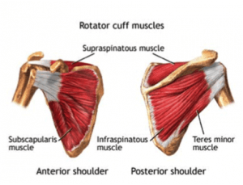
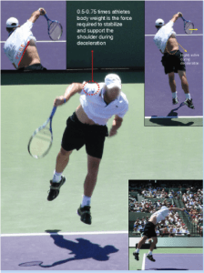
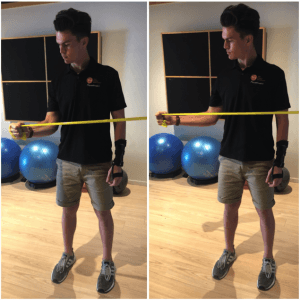
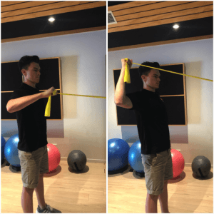

How to avoid Tennis Injuries | The Physio Movement¶
Posted on: Feb 18th, 2019 by thephysiomovement | Categories: Sports Medicine & Nutrition

How to Avoid a Tennis Shoulder Injury¶
The anatomy of the Rotator Cuff¶
The rotator cuff is a term given to a group of four specific muscles and tendons that act to provide strength and stability of the shoulder joint during multi-directional movement and loading of the shoulder joint. These muscles also act to maintain the head of the upper arm bone (humerus) in the shoulder socket during dynamic shoulder movements.
The rotator cuff muscles include:¶
Supraspinatus¶
Infraspinatus¶
Teres minor¶
Subscapularis¶

Video demonstration — the original video for this article was hosted on TennisPlayer.net.
[Due to the high demands the tennis serve places on the shoulder complex, rotator cuff injuries are among the most common injuries for the competitive tennis player.] These injuries frequently occur due overuse of the rotator cuff during the service motion, where the rotator cuff is subjected to high eccentric loads when decelerating the arm following ball impact.
These eccentric contractions of the rotator cuff following ball impact are of vital importance in the shoulder as they assist in maintaining the stability required to both prevent injury and enhance performance. During the tennis serve the upper arm is initially elevated approximately 90-100 degrees relative to the body. From this position, large forces are produced by the internal rotator muscles of the shoulder such as the pectoral muscles and rotator cuff to accelerate the arm and racquet head upwards and forwards toward an explosive ball impact.

Serve preparation phase prior to ball impact
Immediately following ball impact, the posterior rotator cuff muscles have to maximally contract to rapidly decelerate the arm as the arm continues to follow-through, whilst also being responsible for maintaining shoulder joint stability. [Efficient deceleration is vital for preventing rotator cuff injury, as the inability to dissipate these forces can cause overload and overuse of the rotator cuff.]

Deceleration phase following ball impact
Therefore, in order to prevent injury it is essential for the competitive tennis player to maintain sufficient rotator cuff strength, range of motion and dynamic stability of the shoulder joint. [To achieve this, tennis specific strengthening exercises should be undertaken to either reduce injury risk, or rehabilitate following an injury to the rotator cuff.]
Exercises to avoid Tennis Injury¶
Pictured below, Physiotherapist Lachlan demonstrates three specific tennis strengthening progressions to improve the rotator cuffs capacity to decelerate the arm following ball impact for the tennis serve.
Exercise progression 1: Banded external rotation at neutral shoulder elevation

Exercise 1: Banded external rotation at neutral shoulder elevation
Exercise Progression 2: Banded external rotation at 90 degrees shoulder elevation

** **Exercise 2: Banded external rotation at 90 degrees shoulder elevation
Exercise Progression 3: Swiss Ball wall bounces at 90 degrees abduction

Exercise 3: Swiss Ball wall bounces at 90 degrees abduction
Whilst these exercises pictured above are great for improving the strength of the rotator cuff muscles in preparation for tennis serve, it is essential that if you are experiencing shoulder pain that you seek advice from our Sports focused Physiotherapists at The Physio Movement for a comprehensive assessment and treatment plan to allow you to return to tennis pain free.
For any further questions relating to this article, Lachlan can be contacted at The Physio Movement** **
** **
Shoulder injuries: A common complaint for tennis players¶
16 July 2021
With the tennis season now well and truly upon us, Fortius Clinic Consultant Shoulder and Elbow Surgeon Mr Ali Narvani provides advice about common shoulder injuries.
Shoulder pain is extremely common in tennis players. Studies suggest up to 25% of high-level players aged 12 to 19 and up to 50% of middle-aged players have shoulder pain.
The pain is mainly linked to overuse injuries related to repetitive activity of the muscles around the shoulder (particularly the rotator cuff) and those muscles that stabilise the shoulder blade (scapula).
An elite tennis player can hit up to 1,000 serves in a single tournament and the fastest tennis serve recorded is 263km/hour. To produce this speed, the shoulder needs to rotate more than 2,500 degrees per second which is equivalent to seven circles per second. Taking into consideration the huge number of repetitive strokes and the high stroke speed, it is not surprising that tennis players are particularly prone to shoulder injuries.
Common shoulder injuries¶
The most common shoulder conditions in tennis players include impingement, superior labral (SLAP) lesions, damage to the rotator cuff (including partial and full thickness rotator cuff tears), acromioclavicular (ACJ) pain and damage to the long head of the biceps.¶
¶
The rotator cuff tendons attach the upper arm bone to the shoulder blade and pass through a narrow channel. If the balance of the shoulder is disturbed, particularly with repetitive overuse injury, these tendons can become impinged and damaged. There could also be damage to the labrum which is an oval shaped soft tissue ring attached to the socket of the shoulder joint.
However, these conditions are usually secondary to an 'imbalance' in the shoulder. Imbalances can be an abnormal position or movement of the shoulder blade (scapula dyskinesis), decreased internal rotation of the shoulder which is not adequately compensated for by increased external rotation (called glenohumeral internal rotation deficit: GIRD) or alteration in the 'kinetic chain'.
Decreased internal rotation is mainly due to the tightening of the capsule at the back of the shoulder. The capsule is the soft tissue blanket that covers the ball and the socket joint.
The kinetic chain is the linking together of the different body segments during a tennis stroke including feet, ankles, lower legs, knees, upper legs, hips, pelvis, spine, shoulder blades, shoulders, upper arms, elbows, forearms, wrists and fingers. This chain is vital in terms of maximising efficiency and force and minimising the risk of injury to each of the segments including the shoulder.
Treatment for shoulder injuries¶
Shoulder injuries are split into 2 categories -- conditions A which can lead to another set of conditions called conditions B. Conditions A include shoulder blade posture and movement abnormalities, reduced internal rotation and kinetic chain abnormalities. Conditions B include impingement, rotator cuff tears, superior labral lesions and damage to the long head of biceps. The best outcomes are achieved when conditions A are addressed in conjunction with conditions B. Similar to when you change the tyre on a car and need to also pay attention to the wheel balance and alignment.
Initial treatment usually involves physiotherapy. Some patients may have a corticosteroid injection to dampen the inflammation (but not repeated injections). Surgery is usually only considered if the condition remains despite physiotherapy. Surgical procedures vary depending on the injury, but it is usually keyhole surgery and may involve the repair or reconstruction of the various structural issues (rotator cuff tears or labral lesions).
Avoiding shoulder injuries¶
Tennis players can reduce their risk of injury in a number of ways:
-
Correction of poor technique
-
Adjustment of training volume and intensity
-
Adequate warm up
-
Ensuring they have the correct equipment including appropriate tennis racquet grip size, weight and string tension. Footwear which is appropriate for the playing surface is also important
-
Making sure that all the segments of the 'kinetic chain' are in good condition and addressing any dysfunction of the body segments
-
Optimising core stability
-
Preventive exercises to increase shoulder blade (scapula) stabilization, increase rotator cuff strength and optimise shoulder rotation
The right equipment¶
Over the years, tennis racquets have changed enormously. The modern racquets are lighter, stiffer and have a larger head. Lighter racquets allow a faster swing but this can mean less protection to the arm during the shock of impact. Stiffer racquets increase the speed of ball rebound but may also result in a greater shock impact. Larger head sizes enable higher speeds of ball rebound, have a bigger sweet spot and are therefore more forgiving but they may be harder to control and can lead to more rotational force in the hand.
It's important to seek the advice of a tennis coach to ensure that you have the right racquet for you and your playing style.
Rotator Cuff Injuries in Tennis Players¶
Rami G. Alrabaa, Mario H. Lobao, and William N. Levine
Purpose of Review¶
This review presents epidemiology, etiology, management, and surgical outcomes of rotator cuff injuries in tennis players.
Recent Findings¶
Rotator cuff injuries in tennis players are usually progressive overuse injuries ranging from partial-thickness articular- or bursal-sided tears to full-thickness tears. Most injuries are partial-thickness articular-sided tears, while full-thickness tears tend to occur in older-aged players. The serve is the most energy-demanding motion in the sport, and it accounts for 45 to 60% of all strokes performed in a tennis match, putting the shoulder at increased risk of overuse injury and rotator cuff tears. Studies have shown deficits in shoulder range of motion and scapular dyskinesia to occur even acutely after a tennis match. First-line treatment for rotator cuff injuries in any overhead athlete consists of conservative non-operative management with appropriate rest, anti-inflammatory drugs, followed by a specific rehabilitation program. Operative treatment is usually reserved for older-aged players and to those who fail to return to play after conservative measures. Surgical options include rotator cuff debridement with or without tendon repair, biceps tenodesis, and labral procedures. Unlike rotator cuff repairs in the general population, repairs in the elite tennis athlete have less than ideal rates of return to sport to the same level of performance.
Summary¶
Rotator cuff injuries are a common cause of pain and dysfunction in tennis players and other overhead athletes. The etiology of rotator cuff tears in tennis players is multifactorial and usually results from microtrauma and internal impingement in the younger athlete leading to partial tearing and degenerative full-thickness tears in older players. Surgical treatment is pursued in athletes who are still symptomatic despite an extensive course of non-operative treatment as outcomes with regard to returning to sport to the same pre-injury level are modest at best. Debridement alone is usually preferred over rotator cuff repairs for partial tears in younger players due to potential over-constraining of the shoulder joint and decreased rates of return to sport after rotator cuff repairs.
Introduction¶
Tennis players are susceptible to upper extremity injuries as chronic repetitive supraphysiologic forces are generated at the shoulder and elbow throughout a typical match. The shoulder is involved in all strokes in the sport and is particularly prone to injury during the serve and overhead. Similar to other overhead sports, upper extremity injuries are chronic and secondary to repetitive microtrauma and overuse, while lower extremity injuries in tennis athletes tend to be acute injuries [1, 2]. Multiple epidemiologic studies have noted that the most common injuries in tennis athletes are lower extremity injuries, closely followed by upper extremity injuries that typically involve the shoulder and elbow and lastly the trunk which commonly involves injuries to the lower back [3--5].
The overall prevalence of shoulder injuries among tennis players of all levels ranges from 4 to 17% [6, 7]. A recent study noted that apart from lower extremity injuries, shoulder injuries were the most common cause of professional tennis player departure from the sport [8]. The spectrum of shoulder pathology includes chronic rotator cuff inflammation (tendinosis), subacromial bursitis, partial-thickness rotator cuff tears, posterior capsule contracture, long head of biceps injuries, labral tears, scapular dyskinesia, and superior labrum anterior-to-posterior (SLAP) tears. This review will focus on rotator cuff tears, but it is important to keep in mind that tennis players often present with concomitant pathologies.
Rotator Cuff Injuries in Tennis Players¶
The overall injury incidence in tennis players across all competitive levels is estimated to be between 0.05 and 2.9 injuries per player per year and ranges from 0.04 to 3.0 injuries per player per 1000 h played [3]. In elite adolescent athletes, overall injury rates are higher ranging from 2 to 20 injuries per 1000 h played [6]. Overuse injuries to the shoulder have been shown to contribute to nearly 4 to 17% of all tennis injuries [1, 2, 4, 6, 7], but the true incidence of rotator cuff tears in tennis athletes remains unclear [9]. The prevalence of rotator cuff tears in overhead athletes may be underreported as many cuff tears are asymptomatic in athletes. Connor and colleagues [10] reported on imaging findings in completely asymptomatic shoulders of overhead athletes, and they found that 40% of dominant shoulders had MRI findings consistent with partial or full-thickness rotator cuff tears, while none of the non-dominant shoulders had any significant MRI findings. Another study imaged asymptomatic elite adolescent tennis players and found higher frequency of rotator cuff tendinosis on MRI of the dominant shoulder when compared with the non-dominant shoulder [11]. Rotator cuff injuries have also been extensively studied in baseball pitchers. Lesniak and colleagues [12] imaged the dominant shoulder in professional baseball pitchers who were completely asymptomatic and found that around half of the pitchers had partial or full-thickness rotator cuff tears. Moreover, the authors reported that pitchers with higher cumulative innings pitched had increased likelihood of rotator cuff tears on MRI even though they were asymptomatic. These findings suggest that rotator cuff injuries in overhead throwing athletes may be an adaptive response in order to accommodate the extremes in range of motion required for success in the sport [13•].
Rotator cuff pathology is common in the general elderly population in the form of degenerative tears to the anterosuperior rotator cuff with increasing prevalence with age [14]. Full-thickness tears are uncommon in the athlete under 35 years of age, but the rate increases in players older than 50 years of age [15]. As tennis players age, the primary cause of rotator cuff injury shifts from microtrauma due to posterosuperior internal impingement causing partial-thickness cuff tears to degenerative changes leading to full-thickness tears. Partial-thickness rotator cuff tears in the overhead athlete mostly affect the articular side of the tendon and are known as PASTA (partial articular-sided tendon avulsion) lesions. Bursal-sided tears are less common in the overhead athlete and are associated with subacromial impingement. Tears in athletes can also exhibit extension into an intratendinous or intralaminar portion of the tendon and are referred to as PAINT (partial-thickness articular surface intratendinous tears) lesions [13, 16]. Partial-thickness tears can be classified according to Ellman [17] in 3 grades based on tear depth (grade 1, < 3 mm deep or 25% of tendon width; grade 2, 3--6 mm or 50%; grade 4, > 6 mm or > 50%). This classification was revised by Snyder [18] to include location (bursal or articular) and tear severity.
Several mechanisms have been described to cause rotator cuff injuries in overhead athletes, including tensile overload, internal rotation deficit, internal impingement, scapular dyskinesia, and less commonly external impingement [19]. Repetitive and rapid eccentric contraction of the rotator cuff to decelerate the arm during the follow-through phase of the throw generates tensile forces that progressively overload the rotator cuff tendons leading to hypertrophy, microtrauma, and eventual failure of the tendon fibers [20]. These injuries have been well studied in professional baseball pitchers with literature reporting compressive loads as high as 860 N across the glenohumeral joint and humeral angular velocities up to 8000°/s during the throwing motion; the rotator cuff muscles act to offset these extreme forces to keep the humeral head stable and centered on the glenoid [21, 22]. During the tennis serve, there is major stress across the posterosuperior rotator cuff tendons from eccentric contraction to decelerate the arm from its maximum angular velocity [23].
Competitive tennis players and overhead athletes frequently develop excessive shoulder external rotation that seems to be an adaptation to the repetitive external rotation involved in the late cocking phase of the throwing motion. This leads to a corresponding glenohumeral internal rotation deficit (GIRD) as repeated microtrauma to the posterior capsule during the deceleration phase of the throw leads to scar formation and subsequent posterior capsule contracture. As shoulder internal rotation is essential in tennis especially for high velocity serving strokes and forehand ground strokes [24], GIRD alters the shoulder kinematics increasing the risk of shoulder injuries in tennis players and overhead athletes [25, 26].
During the late cocking phase of the serve, maximal external rotation and abduction of the shoulder cause abutment between the greater tuberosity of the humerus and the posterosuperior glenoid labrum. This abutment increases the contact pressure in the articular surface of the posterosuperior rotator cuff leading to a characteristic bipolar injury to the posterosuperior labrum and the articular aspect of the posterior supraspinatus and anterior infraspinatus tendons (Fig. 1). Walch and colleagues [27] dubbed this "internal impingement" and described arthroscopic findings of fraying of the posterosuperior labrum and partial-thickness tearing of the undersurface of the rotator cuff. GIRD and internal impingement seem to be intimately associated with one another. Burkhart and colleagues [20] proposed that the posterior capsular contracture may be the primary structural alteration for the development of internal impingement. Repeated eccentric contraction of the posterosuperior cuff leads to hypertrophy and subsequent stiffness of the posterior structures limiting anterior translation of the humeral head in abduction and external rotation ultimately leading to internal impingement.
With repetitive abduction and external rotation, the overhead athlete can develop internal impingement leading to partial-thickness tearing of the posterosuperior rotator cuff and labrum
Altered scapular mechanics also play a role in cuff injuries. In the late cocking and early acceleration phases of throwing when the humerus is maximally abducted and externally rotated, the scapula undergoes upward rotation to help maintain glenohumeral articular congruency [28]. Imbalance or weakness of the periscapular or posterior cuff muscles may disrupt the dynamic relationship of the scapula and is referred to as scapular dyskinesia. Burkhart and colleagues [20] have described the SICK (scapular malposition, inferior medial border prominence, coracoid pain and malposition, and dyskinesis of scapular movement) scapula syndrome which comprises a characteristic set of features and findings associated with altered scapular kinematics in overhead athletes. Disruption of the scapulohumeral rhythm may also lead to external impingement of the cuff along the coracoacromial arch and result in rotator cuff injuries [19]. The ability to maintain scapular upward rotation during serving seems to be important to prevent chronic injury risk in tennis players. Rich and colleagues [29•] demonstrated that fatigued tennis players had decreased scapular upward rotation during serving, suggesting that heavy serving activity during tournaments acutely leads to abnormal scapular movement patterns that can play a role in long-term rotator cuff injuries. The authors recommend close monitoring of scapular upward rotation in tennis players returning to play after shoulder injuries.
External or subacromial impingement as described by Neer [30] is a common cause of rotator cuff disease in the older population as the cuff tendons impinge in the coracoacromial arch. Although less common in overhead athletes, external impingement can be a cause of rotator cuff disease, bursitis, and cuff dysfunction, as well as subscapularis tears due to repetitive impingement of the lesser tubercle against the coracoid during the follow-through phase of the forehand ground stroke. Although several injury mechanisms exist, one mechanism alone may not be solely involved in the injury process as several mechanisms act in a cascade of events overtime leading to rotator cuff injuries in overhead athletes.
Tennis Specific Considerations¶
The serve is the predominant stroke in tennis accounting for 45 to 60% of all strokes in a service game [31, 32]. As most tournaments are composed of 3-set matches and a player averages 120 serves and 210 ground strokes per match [33•], a high-level tennis player can accumulate around 5400 serves during a competitive season (45 matches per year) without accounting for ground strokes. In contrast, a Major League Baseball pitcher averages approximately 100 pitches per game every 4 days and an overall count of 2655 pitches throughout the season.
Tennis players must use the kinetic chain efficiently to generate power shots. Forces generated at the feet, legs, knees, and thighs travel through the core (abdomen and trunk) and are transmitted to the shoulder, elbow, wrist, hand, and ultimately the racket [34]. The shoulder plays a crucial role in this kinetic chain by transmitting forces while producing a wide range of motion. This is particularly evident in the serve, which has been documented to be the most strenuous stroke on the upper extremity. An explosive contraction of the internal rotator muscles with the shoulder in abduction and external rotation produces an angular velocity of 2420°/s at the acceleration phase of the serve [31]. Depending on the athlete's strength, endurance, flexibility, and skill level, improper technique or fatigue disrupts the kinetic chain leading to inefficient energy transfer and overloading across subsequent joints which can lead to injuries [24]. It has been shown that inappropriate knee flexion during a serve significantly increases the mechanical loads to the upper extremity [35]. Elite and experienced players seem to have more efficient energy transfers in their kinetic chain compared with novice or recreational players who tend to overload the shoulder and elbow joints due to improper technique leading to higher injury risk [36, 37]. Energy transfer between segments (kinetic chain) is a critical concept related to sports injury. An energy flow study comparing injured and uninjured tennis players showed that with higher quality of energy transfer from the trunk to the hand and racket led to increased ball velocity and decreased upper limb joint kinetics [38]. Injured players had a lower overall quality of energy flow through the upper extremity, lower ball velocity, and higher energy absorbed by the shoulder and elbow which likely predisposed them to overuse injuries.
Three main serve types have been described including flat, top-spin or kick, and slice. The top-spin serve is commonly taught to junior tennis players or shorter athletes so that the ball clears the net while still landing in the service box; the top-spin serve is also commonly used as the second serve because of its reliability. Motion analysis and biomechanical studies have shown that the top-spin serve results in the greatest force, while the slice serve had the lowest overall forces and torques generated on the shoulder [39]. Therefore, the top-spin serve should be used judiciously in younger players due to the potential risk of shoulder injuries. This biomechanical data is also relevant to rehabilitation of shoulder injuries, injury prevention, and return-to-play protocols; players recovering from shoulder injuries or surgery should start with slice serves as they generate the least forces and progress top-spin or kick serve at later stages of rehabilitation.
As described earlier, GIRD and internal impingement are intimately related and contribute to shoulder injuries and rotator cuff tears in tennis players [40]. A recent study demonstrated significant decrease in internal rotation of the dominant shoulder in tennis players after 3 h of play [41•]. These acute changes in shoulder range of motion influence the serve kinetic chain predisposing to shoulder injury during long matches. Tennis players should be encouraged to stretch after matches and allow for adequate time to rest in between matches to restore baseline shoulder range of motion to avoid injury and maintain performance. Another study by Rich and colleagues [29•] examined healthy tennis players without any shoulder injuries and had them undergo a tennis serving protocol in order to induce fatigue. The study reported that scapular upward rotation was significantly diminished after fatigue but returned to baseline within 1 day. Similarly, the authors draw attention to the decreased range of motion and altered kinematics of the shoulder after prolonged tennis and caution any athlete to return to competition within a day after heavy serving.
Tennis rackets have transformed from heavy wooden models to larger yet lighter and stiffer graphite composite models [2]. Modern rackets and strings allow for faster balls and increased spin at the expense of higher torques transmitted to the shoulder and elbow which may account for upper extremity overuse injuries [32]. In terms of play surface, hard courts result in faster ball speeds, which theoretically subject the upper extremity to higher forces; however, there is no evidence showing higher injury rates due to a specific playing surface [2, 42].
Clinical Evaluation¶
History¶
Most overhead athletes and tennis players with rotator cuff injuries present with progressive dull shoulder pain, early fatigue, and decreased performance [19]. Pain location is vague and can radiate laterally to the deltoid. Anterior shoulder pain may indicate concomitant labral tear, proximal biceps pathology, or anterior instability, while posterior pain suggests posterior labral pathology or instability. The onset of symptoms, any history of shoulder instability, and other traumatic events should be documented. Symptoms are commonly exacerbated after overhead activities and especially after the serve.
The overhead athlete may have specific complaints related to performance, like early fatigue, decreased strength, decreased throwing or serving velocity, decreased accuracy, or mechanical symptoms. Information about the athlete's training regimen, compliance to rest days, and frequency of competition and practice sections is important to assess for overuse. Possible contributing factors include any recent changes in strokes or equipment that may suggest improper or less ideal technique. Finally, the athlete should be screened for other sources of pain including the back, core, and lower extremities as restoring proper technique is the main focus in rehabilitation if a technical deficiency is identified [2, 35].
Physical Exam¶
Detailed physical examination of the shoulder is performed beginning with inspection, palpation, range of motion evaluation, strength assessment, and progressing to provocative maneuvers. Inspection of bilateral scapulae from behind the patient with the entire torso exposed is paramount to detect differences in scapular motion between sides that may indicate SICK scapula. Asymmetric position, protraction, or a deficit in upward rotation of the scapula with range of motion may indicate scapular dyskinesia. Selective atrophy of the supraspinatus and/or infraspinatus when compared with the contralateral shoulder is a sign of suprascapular nerve compression, which can clinically present with weakness and pain similar to a rotator cuff tear.
Palpation proceeds in a systematic fashion assessing for tenderness of the sternoclavicular joint, acromioclavicular joint, proximal biceps tendons, and along the supraspinatus and infraspinatus fossa. Range of motion is compared with the contralateral shoulder in forward elevation in the scapular plane, external and internal rotation with the arm at the side, abduction, and external and internal rotation in abduction. GIRD can be evident in the dominant shoulder in tennis players with increased external rotation in abduction and a corresponding decrease in internal rotation. Although there is increased external rotation and decreased internal rotation in the dominant shoulder compared with the non-dominant arm, the total arc of rotation of both shoulders should be equivalent [25]. Rotator cuff strength is assessed and compared with the contralateral shoulder. Subtle differences may not be detected as other more powerful muscles contribute to shoulder motion and the cuff muscles are rarely testing in isolation. While rotator cuff tears in elderly patients may result in significant objective weakness and lag signs, that is unusual in athletes and younger players even in the presence of full-thickness rotator cuff tears because other powerful muscles like the deltoid, pectoralis major, and latissimus dorsi compensate for the rotator cuff deficiencies.
Provocative maneuvers then focus on different structures about the shoulder. Classic impingement (external or subacromial impingement) is assessed with the Neer and Hawkins tests. Since concomitant pathology is common in overhead athletes, maneuvers to identify labral pathology and instability are always performed. Athletes with anterior-inferior instability will demonstrate apprehension with abduction and external rotation and have positive relocation and anterior release signs. Superior labral pathology including SLAP tears can be assessed with the active compression and posterior stress tests. Clinically diagnosing SLAP tears is difficult as there is no single test with optimal specificity. Despite the availability of a specific exam maneuver, one study reported that labral lesions were best identified by a combination of the modified dynamic labral shear and active compression maneuvers [43]. Posterior labral pathology is examined with the Jerk and Kim tests. Closely associated proximal biceps tendon pathology is assessed with the Speed and Yergason maneuvers. With the emphasis on the detection of internal impingement in overhead athletes, several examination maneuvers have been developed including the modified relocation test and the internal rotation resistance test [44, 45].
Imaging¶
Accurate diagnosis requires correlating a thorough history and physical exam with imaging findings. Plain radiographs are obtained in all patients and include an anteroposterior view of the scapula (Grashey), axillary, and scapular Y views. The morphology of the acromion is assessed on the scapular Y view and classified as flat, curved, or hooked. Hooked acromions are more often associated with rotator cuff tears [46, 47]. Other radiographic findings that suggest rotator cuff tears include sclerosis or cysts in the greater tuberosity [9]. Ultrasound imaging to assess rotator cuff integrity has the benefits of being low-cost, easy patient tolerance, and dynamic evaluation of the tendons. However, ultrasound remains operator- and facility-dependent [48]. A meta-analysis on the effectiveness of ultrasound for the diagnosis of rotator cuff injuries showed a sensitivity of 84% and specificity of 89% for partial-thickness tears and a sensitivity of 96% and specificity of 93% for full-thickness tears [49].
The gold standard to diagnose rotator cuff tears is magnetic resonance imaging (MRI). Advantages include the ability to evaluate concomitant pathology including the biceps tendon, labrum, capsule and cartilage in addition to less operator-dependency, and high accuracy. A meta-analysis showed a pooled sensitivity and specificity of 80% and 95%, respectively, for diagnosing partial-thickness cuff tears on MRI with higher sensitivity and specificity values (0.91 and 0.97) for full-thickness tears [50]. Higher-field strength MRIs and the availability of musculoskeletal radiologists led to improved accuracy. Differentiating between tendinosis and partial-thickness tears can be difficult using conventional MRIs. Enhanced diagnostic accuracy can be achieved for diagnosing partial-thickness cuff tears and labral pathology with the use of MR arthrography (MRA) (Fig. 2), placing the arm in the throwing position in abduction and external rotation (ABER view), and higher-field (3 T) strength magnets [51]. One study of arthroscopically confirmed partial-thickness cuff tears with a horizontal component showed that only 21% of the lesions were detected on standard coronal oblique MRI images, while 100% of the lesions were identified on ABER views [52].
MR arthrogram of the dominant right shoulder of a 20-year-old male overhead athlete showing partial articular-sided tearing of the supraspinatus. The tear appears to involve approximately 75% of the tendon thickness with an intact bursal surface. This patient was treated with repair of the partial tear with an arthroscopic transtendon repair technique shown in Figs. Figs.3,3, ,4,4, and and55
The clinician must use caution when interpreting MRI studies. As previously mentioned, several studies have found abnormalities of the rotator cuff on imaging in completely asymptomatic overhead athletes and tennis players [10--12]. Moreover, the timing of the MRI after injury or onset of symptoms is important to consider as there can be signal abnormalities found in overhead athletes after competition, which can take up to a week to normalize on imaging [53, 54].
Management¶
Treatment of rotator cuff injuries in tennis players depends on several patient- and injury-specific factors including onset of injury, thickness of the cuff tear, extent of impairment, presence of concomitant injuries, timing within the season or off-season (in an elite or professional athlete), and response to non-operative treatment.
Non-operative¶
First-line non-operative treatment of rotator cuff injuries in tennis players includes rest from the sport and overhead activities, physical therapy, and a rehabilitation program. Duration of non-operative treatment varies on severity of symptoms, pathology, and the individual athlete. Most treatment plans involve at least 3 months as a reasonable period for a comprehensive rehabilitation program [9, 54, 55]. Non-operative treatment should be exhausted prior to consideration of surgery for the elite tennis player as the results of surgical intervention are unpredictable in terms of resolution of symptoms and return to previous level of sport.
During the resting phase of treatment, NSAIDs may be used to decrease inflammation and pain to assist in the rehabilitation phase. Selected athletes may also benefit from a corticosteroid injection to decrease inflammation and facilitate therapy especially if there are signs of subacromial impingement or bursal-sided tearing [13•]. Articular injection is an option for articular-sided rotator cuff injuries. Corticosteroid injections should be used sparingly in the young athlete due to risks of tendon weakening and rupture [56, 57]. In a meta-analysis, Boudreault and colleagues [58] reported that oral NSAIDs and corticosteroid injections may have similar short-term efficacy in terms of pain reduction and functional improvement in the treatment of rotator cuff tendinopathy. However, this study was not limited to athletes. Other studies have shown mixed results with regard to the efficacy of subacromial steroid injections for rotator cuff pathology in the general population with some studies demonstrating reduction in pain and improved function, while others reported no difference when compared with NSAIDs or placebo [59--63]. There is limited evidence-based literature on the use of corticosteroid shoulder injections in elite athletes. A few case series of collegiate athletes show at least temporary relief of symptoms with subacromial steroid injections for rotator cuff pathology, but inconclusive results at mid- and long-term [64, 65]. The use of platelet-rich plasma (PRP) has gained popularity for the treatment of various orthopedic conditions. Although there is no literature on the use of PRP specifically in rotator cuff injuries in athletes, general population studies show no difference in outcomes between patients who received PRP and controls for the treatment of rotator cuff tendinopathy [66, 67]. Furthermore, significant variability in the PRP attainment methods across different systems makes it challenging to draw definitive conclusions [68, 69].
Treatment in the tennis player should evaluate the athlete's serve and stroke mechanics. As discussed previously, the entire kinetic chain must be assessed, including lower limbs and core because improper technique at any link of the chain may disrupt the energy transfer downstream in the chain manifesting in upper extremity overuse injuries. Therefore, strength training of the core, lower, and upper extremities as well as proper serve and stroke mechanics must be emphasized during the rehabilitation process to minimize recurrent or new site injuries. Physical therapy begins with exercises focused on maximizing range of motion followed by strengthening of the rotator cuff and periscapular muscles. GIRD should be addressed with sleeper stretches of the posterior capsule [20]. Scapular dyskinesia and SICK scapula require progressive stretching program and integrating scapular strengthening exercises by having the athlete retract the scapula to its normal anatomic position [19]. Once shoulder range of motion improves and rotator cuff strengthening is enhanced, the last phase of rehabilitation in non-operative treatment involves a gradual return to sport specific exercises and training. Wilk and colleagues [70•] reported on an evidence-based comprehensive 4-phase rehabilitation program for non-operative treatment of shoulder issues including rotator cuff tears in the overhead athlete. Another review by Cools and colleagues [71] outlines the rehabilitation guidelines for internal impingement specifically in the tennis player.
Operative¶
When an athlete is unable to return to tennis despite extensive non-operative treatment, surgery can be pursued. It is important, however, to have a frank discussion with the patient, trainers, and managers of elite athletes regarding the unpredictability of surgical outcomes in terms of return to sport at a high level. Surgical approaches have evolved from open to mini-open to arthroscopic with limited literature supporting one approach over another, but arthroscopic surgery is most commonly preferred and performed in athletes [13, 55]. Surgical treatment includes debridement alone, partial or full-thickness rotator cuff repair, and treatment of concomitant pathology found at the time of arthroscopy (including labral or SLAP repair, biceps tenodesis or tenotomy, or acromioplasty).
Ultimately, patient age, preoperative imaging, size and retraction of the tear, tissue quality, and surgeon experience or preference play a role in determining the surgical plan. Surgical treatment begins with debridement to assess tear depth and extent. Irregular unhealthy tendon edges and flaps are debrided. Partial-thickness articular-sided cuff tears are debrided from within the joint to a stable margin. Using a spinal needle, a monofilament suture is percutaneously placed to mark the partial-thickness cuff injury. The suture is then identified in the subacromial space, and the bursal cuff integrity is examined.
Options for management include debridement alone, bioinductive scaffold placement on the bursal cuff, transtendinous repair, or conversion to full-thickness tear and repair. Historically, recommendations in the general population report that tears under 50% of the tendon thickness can be debrided alone, whereas tears involving more than 50% of the tendon should be repaired. This "cutoff" has been propagated in the literature, and there is some biomechanical evidence that suggests significantly increased strain with partial articular cuff tears exceeding 50% of the tendon thickness [72]. However, there is no technique to accurately determine the thickness of the tear, and one study has shown that there is poor interobserver reliability when estimating the extent of partial-thickness tears [73]. While the 50% threshold has historically been used for tendon repair, more recent literature suggests repair only of more advanced partial-thickness tears exceeding 75% in the young overhead athletic population [9, 55]. This is largely due to unpredictable outcomes of cuff repair in the athlete and the risk of over-tensioning the cuff leading to a non-anatomic repair and possibly functional deficits in the sport.
Partial-thickness articular cuff tears can be repaired with a transtendinous approach (Figs. 3, ,4,4, and and5)5) or by completing the tear creating a full-thickness defect and then proceeding with repair back to the footprint. This is controversial in tennis players due the concern of over-tensioning, loss of motion, and inability to return to tennis. The transtendon repair technique advances the articular fibers to the medial footprint while maintaining the lateral fibers intact. It is essential to plan the appropriate placement of the anchors in order to achieve an anatomic repair; any detached rotator cable tissue should be restored back to the footprint as significant compromise of the cable tissue can alter glenohumeral kinematics [74•].
{kind=link}
Transtendon repair technique of the partial articular cuff tear shown on imaging in Fig. Fig.22 of the patient's right shoulder. Patient is placed in the lateral decubitus position. (a) Intra-articular view from a standard posterior portal of the articular surface of the supraspinatus shows partial-thickness tearing and fraying. (b) The undersurface of the cuff is debrided with a motorized shaver to stable margins. (c) A spinal needle can be placed percutaneously through the tear under visualization, and a monofilament suture can be passed through the eyelet of the needle in order to mark the tear from within the joint in order to evaluate its corresponding bursal surface from the subacromial space. (d) The arthroscope and shaver are introduced into the subacromial space to complete a bursectomy and evaluate the bursal side of the cuff. In this case, the bursal side is intact; however, there is significant tearing of the articular side estimated to be at least 75% of the tendon thickness, so the decision was made to proceed with transtendon repair (BT, biceps tendon; HH, humeral head)
{kind=link}
Transtendon repair technique of the partial articular cuff tear shown on imaging in Fig. 2 of the patient's right shoulder. (a) View from a standard posterior portal. The medial footprint is debrided down to bone with a motorized shared just lateral to the humeral head articular surface. (b) Decision was made to place 2 medial anchors for this repair, so the first anterior anchor is placed percutaneously, and then sutures are passed through the tendon. First, a suture limb is retrieved from the anterior cannula. Then a spinal needle is percutaneously placed through tendon in anticipation of where the suture must be passed. (c) A monofilament blue suture which is to be used as a shuttling suture is passed through the eyelet of the spinal needle and is retrieved out the anterior portal. The blue braided suture from the suture anchor is then looped around the shuttling suture outside the body from the anterior cannula. The monofilament shuttling suture is then retrieved from its percutaneous entry site (where it was placed through the spinal needle), therefore passing the blue braided suture through the tendon at the desired location. (d) The second posterior suture anchor is then placed percutaneously. The location of this posterior anchor was crucial in this case as it was used to reduce the posterior cable tissue that was detached. (e) Again, sutures from the second anchor are passed through the tendon in the same manner as described. Once all sutures are passed through the tendon, they are tied in the subacromial space. (f) The arthroscope is introduced into the subacromial space and a lateral cannula is established. The corresponding suture limbs are tied together using a knot pusher to reduce the tear (BT, biceps tendon; HH, humeral head)
{kind=link}
Transtendon repair technique of the partial articular cuff tear shown on imaging in Fig. Fig.22 of the patient's right shoulder. (a) Intra-articular view from the posterior portal showing the anterior aspect of the tendon reduced to the medial footprint. (b) Intra-articular view from the anterior portal showing the posterior aspect of the tendon reduced. At this point, the decision was made for placement of a lateral row anchor incorporating all the suture limbs that were tied in order to provide compression. (c) Subacromial view showing placement of the lateral row anchor incorporating all the suture limbs that were tied. (d) View from the lateral subacromial portal showing the final repair construct (BT, biceps tendon; HH, humeral head)
Partial articular-sided cuff tears are completed into full tears and repaired if it is determined that the majority of the tendon thickness is involved (over 75%), if the quality of the intact lateral fibers are poor, or if there is substantial bursal-sided involvement. Full-thickness cuff tears can then be repaired as they are in the general population using either single- or double-row techniques. Double-row and transosseous equivalent repairs have been shown to have increased strength, resistance to cyclic loading, and improved footprint coverage [75, 76].
Intralaminar tears can occur specifically in overhead athletes and are termed partial-thickness articular surface intratendinous (PAINT) lesions. These tears can be repaired with side-to-side sutures without anchoring the repair back to the bony footprint in order to avoid excess tensioning of the cuff (Fig. 6) [13, 16, 77]. Over-tensioning the repair by passing sutures to medial on the cuff in a suture anchor repair or not recreating an anatomic footprint during repair can lead to tightening of the shoulder which will compromise the kinematics of the tennis player and may lead to functional deficits in the sport.
{kind=link}
The arthroscopic repair of a laminated rotator cuff tear referred to as a PAINT (partial-thickness articular surface intratendinous tear) lesion in a side-to-side fashion to repair the laminated portions without anchoring back to the footprint in order to avoid over-tensioning of the cuff and potential deficits in abduction and external rotation. Patient is a 22-year-old right-hand-dominant male and high-level overhead athlete with right shoulder pain. MRA confirmed partial-thickness articular-sided cuff tearing at the posterior supraspinatus and anterior infraspinatus junction along with posterosuperior labral fraying. These findings were consistent with internal impingement in this elite overhead athlete. Patient was placed in the lateral decubitus position, and diagnostic arthroscopic began from a standard posterior portal. (a) View from the posterior portal shows posterosuperior labral fraying that was debrided. (b) The motorized shaver is placed in between the laminated flaps to stimulate healing. After debridement of the tear, the arthroscope is introduced into the subacromial space to assess the bursal aspect of the cuff which was intact in this case. (c) A spinal needle is placed percutaneously to capture both layers of the laminated tear. A monofilament suture (blue PDS suture in this case) is threaded through the eyelet of the spinal needle to serve as a shuttling suture. (d) The shuttling suture is retrieved from the anterior portal. Outside the anterior portal, a braided high tensile strength suture is wrapped around the shuttling suture, and the shuttling suture is retrieved from its percutaneous entry site in order to pass the suture through the cuff tissue. (e) A spinal needle is then percutaneously introduced to pass the cuff posterior to suture that was already passed, and a shuttling suture is again passed through the spinal needle and retrieved from the anterior portal, and the suture limb from the anterior portal that was already passed through the cuff is shuttled through. (f) These steps create a suture in horizontal mattress configuration as shown. This process is repeated 3 times in order to create 3 horizontal mattress sutures to repair the laminated flaps. (g) After all sutures are passed, the arthroscope is introduced into the subacromial space, and the corresponding suture limbs are tied to each other through a lateral subacromial cannula. (h) Subacromial view of the final repair construct of the PAINT lesion without restoration to the footprint to avoid compromise of abduction and external rotation
Outcomes¶
A few studies investigate the outcomes of rotator cuff repair or debridement in tennis players specifically. Sonnery-Cottet and colleagues [15] retrospectively evaluated 51 tennis players with partial or full-thickness tears. Thirty-two patients were recreational tennis players, while 19 were elite competitive tennis players. The authors reported that full-thickness tears were more common in the older player, while partial-thickness tears were more common in the younger player. In their cohort, 42 patients underwent cuff repair, while 9 patients had debridement alone. Seventy-eight percent (40 of 51) of patients were able to return to tennis at an average of 10 months after surgery; the authors reported no difference in return to tennis between the repair or debridement cohorts. Bigliani and colleagues [78] also retrospectively reviewed their series of rotator cuff repairs in tennis players. They reviewed 23 tennis players with an average age of 58 years who underwent repair of cuff tears at an average 39-month follow-up. Overall, 22 of 23 patients returned to tennis with 19 returning to the same level, while 3 returned at a lower level. Only 1 patient was unable to return to tennis. While these 2 studies demonstrated positive outcomes for return to tennis, more recent studies in younger athletes show more unpredictable results. A recent small case series of 8 professional female tennis players who underwent shoulder surgery on their dominant arm (5 of which were due to rotator cuff injuries) reported that 7 of 8 players were able to return to professional play; however, only 2 of 8 were able to return to the same level of play and ranking postoperatively [79•].
Tibone and colleagues [80] also retrospectively reviewed their series of 45 athletes with an average age of 45 years (with the majority of patients having partial-thickness tears) and found that only 56% of athletes were able to return to sport at their pre-injury level. Of the athletes who required maximal arm abduction and external rotation for their sport, only 41% (12 of 29) were able to return to play.
A recent meta-analysis [81•] reviewed 25 studies with 859 patients and assessed return to sport after surgical treatment of rotator cuff injury. The most common sport was baseball followed by tennis. The authors found that the overall rate of return to sport was 84.7% with 65.9% of patients returning to the same level of play. However, when isolating for professional or competitive athletes, only 49.9% of these athletes were able to return to an equivalent level of play. Altintas and colleagues [82•] showed in a systematic review of 15 studies (486 patients) that 70.2% of athletes were able to return to pre-injury level of play after arthroscopic rotator cuff repair. However, only 61.5% of elite/competitive athletes did so, and only 38% of overhead athletes returned to the same level of play. These findings are supported by another study that showed the majority (88%) of recreational athletes were able to return to some sport activity after rotator cuff repair with a decreased percentage (68%) returning to the same sport; but competitive athletes did so at a much lower rate [83]. Another study retrospectively reviewed 32 adolescent athletes (average age 16) who underwent arthroscopic rotator cuff repair for mostly partial tears. The authors reported that the majority of overhead athletes (93%) were able to return to sport; however, more than half (57%) were forced to play a different position in the sport [84•]. Several other studies have shown less than ideal outcomes for overhead athletes treated operatively for rotator cuff tears in terms of return to play to the same level. At the professional level, full-thickness rotator cuff tears may be career-ending injuries. Mazoue and Andrews [85] reviewed a cohort of 16 professional baseball players who underwent repair for full-thickness cuff tears and noted that only 1 pitcher and 1 position player were able to return to professional play following surgery on their dominant arm.
In summary, there appears to be a distinction between the older, recreational tennis player with a full-thickness rotator cuff tear and the younger, higher level player with a partial-thickness tear. The outcomes of surgical treatment in terms of return to sport is favorable for the older recreational athlete, while several studies in the sports literature show less than ideal return to sport to the same level of play in the younger more competitive athlete.
Conclusions¶
Tennis players and other overhead athletes are predisposed to overuse injuries of the shoulder, including rotator cuff tears. MRI remains the gold standard for imaging of rotator cuff pathology and other concomitant injuries about the shoulder. Primary treatment of rotator cuff tears is non-operative with a period of rest followed by progressive rehabilitation. Proper technique is emphasized during the rehabilitation process as well as strengthening of the overall kinetic chain including the trunk and lower extremities.
Adequate rest between tennis matches can help minimize injury as studies have shown alterations in shoulder range of motion and scapular kinematics after prolonged play that self-resolve with rest. Rotator cuff injuries in the tennis player are most commonly partial articular-sided tears. Full-thickness tears occur in the older tennis player and are likely due to degenerative changes. If non-operative treatment fails, surgical treatment can be pursued, but results are modest at best for return to sport to pre-injury level of play. Full-thickness tears are treated as they are in the general population with repair back to the footprint with suture anchors; however, it must be recognized that full repair may be difficult for the tennis player to return to pre-surgical form. Partial-thickness tears can be treated with debridement alone or with partial repair; the tear can also be completed into a full-thickness tear and then subsequently repaired to the footprint. In the general population, partial-thickness articular-sided tears are generally repaired if the tear involves more than half of the tendon thickness. A higher threshold exists for repair of cuff tears in younger high-level athletes as several studies show less than ideal outcomes in terms of return to sport and return to the same level of play as compared with the older recreational tennis player. These decreased outcomes may be related to over-constraint of the athlete's shoulder after a cuff repair as several studies have shown imaging consistent with partial-thickness cuff tears in asymptomatic overhead athletes suggesting that the "pathology" may be an adaptive response to allow for extremes of range of motion in abduction and external rotation. Finally, newer technology including use of a bioinductive scaffold to enhance healing may be an option to consider in the future, but further research is necessary before it can be widely recommended.
[References:]
-
Chung KC, Lark ME. Upper extremity injuries in tennis players: diagnosis, treatment, and management. Hand Clin. 2017;33(1):175--186. [PMC free article] [PubMed] [Google Scholar]
-
Dines JS, Bedi A, Williams PN, Dodson CC, Ellenbecker TS, Altchek DW, Windler G, Dines DM. Tennis injuries: epidemiology, pathophysiology, and treatment. J Am Acad Orthop Surg. 2015;23(3):181--189. [PubMed] [Google Scholar]
-
Pluim BM, Staal JB, Windler GE, Jayanthi N. Tennis injuries: occurrence, aetiology, and prevention. Br J Sports Med. 2006;40(5):415--423. [PMC free article] [PubMed] [Google Scholar]
-
Hutchinson MR, Laprade RF, Burnett QM, 2nd, Moss R, Terpstra J. Injury surveillance at the USTA Boys' Tennis Championships: a 6-yr study. Med Sci Sports Exerc. 1995;27(6):826--830. [PubMed] [Google Scholar]
-
Winge S, Jorgensen U, Lassen NA. Epidemiology of injuries in Danish championship tennis. Int J Sports Med. 1989;10(5):368--371. [PubMed] [Google Scholar]
-
Abrams GD, Renstrom PA, Safran MR. Epidemiology of musculoskeletal injury in the tennis player. Br J Sports Med. 2012;46(7):492--498. [PubMed] [Google Scholar]
-
Lynall RC, Kerr ZY, Djoko A, Pluim BM, Hainline B, Dompier TP. Epidemiology of National Collegiate Athletic Association men's and women's tennis injuries, 2009/2010-2014/2015. Br J Sports Med. 2016;50(19):1211--1216. [PubMed] [Google Scholar]
-
Okholm Kryger K, Dor F, Guillaume M, Haida A, Noirez P, Montalvan B, Toussaint JF. Medical reasons behind player departures from male and female professional tennis competitions. Am J Sports Med. 2015;43(1):34--40. [PubMed] [Google Scholar]
-
Shaffer B, Huttman D. Rotator cuff tears in the throwing athlete. Sports Med Arthrosc Rev. 2014;22(2):101--109. [PubMed] [Google Scholar]
-
Connor PM, Banks DM, Tyson AB, Coumas JS, D'Alessandro DF. Magnetic resonance imaging of the asymptomatic shoulder of overhead athletes: a 5-year follow-up study. Am J Sports Med. 2003;31(5):724--727. [PubMed] [Google Scholar]
-
Johansson FR, Skillgate E, Adolfsson A, Jenner G, DeBri E, Swardh L, et al. Asymptomatic elite adolescent tennis players' signs of tendinosis in their dominant shoulder compared with their nondominant shoulder. J Athl Train. 2015;50(12):1299--1305. [PMC free article] [PubMed] [Google Scholar]
-
Lesniak BP, Baraga MG, Jose J, Smith MK, Cunningham S, Kaplan LD. Glenohumeral findings on magnetic resonance imaging correlate with innings pitched in asymptomatic pitchers. Am J Sports Med. 2013;41(9):2022--2027. [PubMed] [Google Scholar]
-
Makhni E, ElAttrache N, Ahmad C. Rotator cuff tears in baseball players. In: Ahmad C, Romeo A, editors. Baseball Sports Medicine. Philadelphia: Wolters Kluwer; 2019. pp. 181--186. [Google Scholar]
-
Teunis T, Lubberts B, Reilly BT, Ring D. A systematic review and pooled analysis of the prevalence of rotator cuff disease with increasing age. J Shoulder Elb Surg. 2014;23(12):1913--1921. [PubMed] [Google Scholar]
-
Sonnery-Cottet B, Edwards TB, Noel E, Walch G. Rotator cuff tears in middle-aged tennis players: results of surgical treatment. Am J Sports Med. 2002;30(4):558--564. [PubMed] [Google Scholar]
-
Conway JE. Arthroscopic repair of partial-thickness rotator cuff tears and SLAP lesions in professional baseball players. Orthop Clin North Am. 2001;32(3):443--456. [PubMed] [Google Scholar]
-
Ellman H. Diagnosis and treatment of incomplete rotator cuff tears. Clin Orthop Relat Res. 1990;254:64--74. [PubMed] [Google Scholar]
-
Snyder SJ, Pachelli AF, Del Pizzo W, Friedman MJ, Ferkel RD, Pattee G. Partial thickness rotator cuff tears: results of arthroscopic treatment. Arthroscopy. 1991;7(1):1--7. [PubMed] [Google Scholar]
-
Economopoulos KJ, Brockmeier SF. Rotator cuff tears in overhead athletes. Clin Sports Med. 2012;31(4):675--692. [PubMed] [Google Scholar]
-
Burkhart SS, Morgan CD, Kibler WB. The disabled throwing shoulder: spectrum of pathology part I: pathoanatomy and biomechanics. Arthroscopy. 2003;19(4):404--420. [PubMed] [Google Scholar]
-
Dillman CJ, Fleisig GS, Andrews JR. Biomechanics of pitching with emphasis upon shoulder kinematics. J Orthop Sports Phys Ther. 1993;18(2):402--408. [PubMed] [Google Scholar]
-
Gainor BJ, Piotrowski G, Puhl J, Allen WC, Hagen R. The throw: biomechanics and acute injury. Am J Sports Med. 1980;8(2):114--118. [PubMed] [Google Scholar]
-
Williams GR, Kelley M. Management of rotator cuff and impingement injuries in the athlete. J Athl Train. 2000;35(3):300--315. [PMC free article] [PubMed] [Google Scholar]
-
Elliott B. Biomechanics and tennis. Br J Sports Med. 2006;40(5):392--396. [PMC free article] [PubMed] [Google Scholar]
-
Wilk KE, Macrina LC, Fleisig GS, Porterfield R, Simpson CD, 2nd, Harker P, et al. Correlation of glenohumeral internal rotation deficit and total rotational motion to shoulder injuries in professional baseball pitchers. Am J Sports Med. 2011;39(2):329--335. [PubMed] [Google Scholar]
-
Wilk KE, Macrina LC, Fleisig GS, Aune KT, Porterfield RA, Harker P, Evans TJ, Andrews JR. Deficits in glenohumeral passive range of motion increase risk of shoulder injury in professional baseball pitchers: a prospective study. Am J Sports Med. 2015;43(10):2379--2385. [PubMed] [Google Scholar]
-
Walch G, Boileau P, Noel E, Donell ST. Impingement of the deep surface of the supraspinatus tendon on the posterosuperior glenoid rim: an arthroscopic study. J Shoulder Elb Surg. 1992;1(5):238--245. [PubMed] [Google Scholar]
-
Myers JB, Laudner KG, Pasquale MR, Bradley JP, Lephart SM. Scapular position and orientation in throwing athletes. Am J Sports Med. 2005;33(2):263--271. [PubMed] [Google Scholar]
-
Rich RL, Struminger AH, Tucker WS, Munkasy BA, Joyner AB, Buckley TA. Scapular upward-rotation deficits after acute fatigue in tennis players. J Athl Train. 2016;51(6):474--479. [PMC free article] [PubMed] [Google Scholar]
-
Neer CS. Anterior acromioplasty for the chronic impingement syndrome in the shoulder. J Bone Joint Surg Am. 2005;87a(6):1399. [PubMed] [Google Scholar]
-
Johnson CD, McHugh MP, Wood T, Kibler B. Performance demands of professional male tennis players. Br J Sports Med. 2006;40(8):696--699. [PMC free article] [PubMed] [Google Scholar]
-
Miller S. Modern tennis rackets, balls, and surfaces. Br J Sports Med. 2006;40(5):401--405. [PMC free article] [PubMed] [Google Scholar]
-
Myers NL, Sciascia AD, Kibler WB, Uhl TL. Volume-based interval training program for elite tennis players. Sports Health. 2016;8(6):536--540. [PMC free article] [PubMed] [Google Scholar]
-
Kovacs MS. Applied physiology of tennis performance. Br J Sports Med. 2006;40(5):381--385. [PMC free article] [PubMed] [Google Scholar]
-
Elliott B, Fleisig G, Nicholls R, Escamilia R. Technique effects on upper limb loading in the tennis serve. J Sci Med Sport. 2003;6(1):76--87. [PubMed] [Google Scholar]
-
Wei SH, Chiang JY, Shiang TY, Chang HY. Comparison of shock transmission and forearm electromyography between experienced and recreational tennis players during backhand strokes. Clin J Sport Med. 2006;16(2):129--135. [PubMed] [Google Scholar]
-
Lo KC, Hsieh YC. Comparison of ball-and-racket impact force in two-handed backhand stroke stances for different-skill-level tennis players. J Sports Sci Med. 2016;15(2):301--307. [PMC free article] [PubMed] [Google Scholar]
-
Martin C, Bideau B, Bideau N, Nicolas G, Delamarche P, Kulpa R. Energy flow analysis during the tennis serve: comparison between injured and noninjured tennis players. Am J Sports Med. 2014;42(11):2751--2760. [PubMed] [Google Scholar]
-
Abrams GD, Sheets AL, Andriacchi TP, Safran MR. Review of tennis serve motion analysis and the biomechanics of three serve types with implications for injury. Sports Biomech. 2011;10(4):378--390. [PubMed] [Google Scholar]
-
Myers JB, Laudner KG, Pasquale MR, Bradley JP, Lephart SM. Glenohumeral range of motion deficits and posterior shoulder tightness in throwers with pathologic internal impingement. Am J Sports Med. 2006;34(3):385--391. [PubMed] [Google Scholar]
-
Martin C, Kulpa R, Ezanno F, Delamarche P, Bideau B. Influence of playing a prolonged tennis match on shoulder internal range of motion. Am J Sports Med. 2016;44(8):2147--2151. [PubMed] [Google Scholar]
-
Pluim BM, Clarsen B, Verhagen E. Injury rates in recreational tennis players do not differ between different playing surfaces. Br J Sports Med. 2018;52(9):611--615. [PubMed] [Google Scholar]
-
Ben Kibler W, Sciascia AD, Hester P, Dome D, Jacobs C. Clinical utility of traditional and new tests in the diagnosis of biceps tendon injuries and superior labrum anterior and posterior lesions in the shoulder. Am J Sports Med. 2009;37(9):1840--1847. [PubMed] [Google Scholar]
-
Hamner DL, Pink MM, Jobe FW. A modification of the relocation test: arthroscopic findings associated with a positive test. J Shoulder Elb Surg. 2000;9(4):263--267. [PubMed] [Google Scholar]
-
Zaslav KR. Internal rotation resistance strength test: a new diagnostic test to differentiate intra-articular pathology from outlet (Neer) impingement syndrome in the shoulder. J Shoulder Elb Surg. 2001;10(1):23--27. [PubMed] [Google Scholar]
-
Bigliani LU, Ticker JB, Flatow EL, Soslowsky LJ, Mow VC. The relationship of acromial architecture to rotator cuff disease. Clin Sports Med. 1991;10(4):823--838. [PubMed] [Google Scholar]
-
Pearsall AW, Bonsell S, Heitman RJ, Helms CA, Osbahr D, Speer KP. Radiographic findings associated with symptomatic rotator cuff tears. J Shoulder Elb Surg. 2003;12(2):122--127. [PubMed] [Google Scholar]
-
Rudzki JR, Shaffer B. New approaches to diagnosis and arthroscopic management of partial-thickness cuff tears. Clin Sports Med. 2008;27(4):691--717. [PubMed] [Google Scholar]
-
Smith TO, Back T, Toms AP, Hing CB. Diagnostic accuracy of ultrasound for rotator cuff tears in adults: a systematic review and meta-analysis. Clin Radiol. 2011;66(11):1036--1048. [PubMed] [Google Scholar]
-
Smith TO, Daniell H, Geere JA, Toms AP, Hing CB. The diagnostic accuracy of MRI for the detection of partial- and full-thickness rotator cuff tears in adults. Magn Reson Imaging. 2012;30(3):336--346. [PubMed] [Google Scholar]
-
Meister K, Thesing J, Montgomery WJ, Indelicato PA, Walczak S, Fontenot W. MR arthrography of partial thickness tears of the undersurface of the rotator cuff: an arthroscopic correlation. Skelet Radiol. 2004;33(3):136--141. [PubMed] [Google Scholar]
-
Lee SY, Lee JK. Horizontal component of partial-thickness tears of rotator cuff: imaging characteristics and comparison of ABER view with oblique coronal view at MR arthrography initial results. Radiology. 2002;224(2):470--476. [PubMed] [Google Scholar]
-
Hechtman K, Bemden A, Thorpe M, Blaske K, Arteaga J. Paper 160: MRI evaluation of rotator cuff inflammation in baseball pitchers pre and post-competition. Arthroscopy. 2012;28(8):e268. [Google Scholar]
-
Liu JN, Garcia GH, Gowd AK, Cabarcas BC, Charles MD, Romeo AA, et al. Treatment of partial thickness rotator cuff tears in overhead athletes. Curr Rev Musculoskelet Med. 2018;11(1):55--62. [PMC free article] [PubMed] [Google Scholar]
-
Weiss LJ, Wang D, Hendel M, Buzzerio P, Rodeo SA. Management of rotator cuff injuries in the elite athlete. Curr Rev Musculoskelet Med. 2018;11(1):102--112. [PMC free article] [PubMed] [Google Scholar]
-
Schneeberger AG, Nyffeler RW, Gerber C. Structural changes of the rotator cuff caused by experimental subacromial impingement in the rat. J Shoulder Elb Surg. 1998;7(4):375--380. [PubMed] [Google Scholar]
-
Wei AS, Callaci JJ, Juknelis D, Marra G, Tonino P, Freedman KB, et al. The effect of corticosteroid on collagen expression in injured rotator cuff tendon. J Bone Joint Surg Am. 2006;88(6):1331--1338. [PMC free article] [PubMed] [Google Scholar]
-
Boudreault J, Desmeules F, Roy JS, Dionne C, Fremont P, Macdermid JC. The efficacy of oral non-steroidal anti-inflammatory drugs for rotator cuff tendinopathy: a systematic review and meta-analysis. J Rehabil Med. 2014;46(4):294--306. [PubMed] [Google Scholar]
-
Buchbinder R, Green S, Youd JM. Corticosteroid injections for shoulder pain. Cochrane Database Syst Rev. 2003;1:CD004016. [PMC free article] [PubMed] [Google Scholar]
-
Blair B, Rokito AS, Cuomo F, Jarolem K, Zuckerman JD. Efficacy of injections of corticosteroids for subacromial impingement syndrome. J Bone Joint Surg Am. 1996;78(11):1685--1689. [PubMed] [Google Scholar]
-
Alvarez CM, Litchfield R, Jackowski D, Griffin S, Kirkley A. A prospective, double-blind, randomized clinical trial comparing subacromial injection of betamethasone and xylocaine to xylocaine alone in chronic rotator cuff tendinosis. Am J Sports Med. 2005;33(2):255--262. [PubMed] [Google Scholar]
-
Mohamadi A, Chan JJ, Claessen FM, Ring D, Chen NC. Corticosteroid injections give small and transient pain relief in rotator cuff tendinosis: a meta-analysis. Clin Orthop Relat Res. 2017;475(1):232--243. [PMC free article] [PubMed] [Google Scholar]
-
Withrington RH, Girgis FL, Seifert MH. A placebo-controlled trial of steroid injections in the treatment of supraspinatus tendonitis. Scand J Rheumatol. 1985;14(1):76--78. [PubMed] [Google Scholar]
-
Cohen SB, Towers JD, Bradley JP. Rotator cuff contusions of the shoulder in professional football players: epidemiology and magnetic resonance imaging findings. Am J Sports Med. 2007;35(3):442--447. [PubMed] [Google Scholar]
-
Payne LZ, Altchek DW, Craig EV, Warren RF. Arthroscopic treatment of partial rotator cuff tears in young athletes. A preliminary report. Am J Sports Med. 1997;25(3):299--305. [PubMed] [Google Scholar]
-
Carr AJ, Murphy R, Dakin SG, Rombach I, Wheway K, Watkins B, Franklin SL. Platelet-rich plasma injection with arthroscopic acromioplasty for chronic rotator cuff tendinopathy: a randomized controlled trial. Am J Sports Med. 2015;43(12):2891--2897. [PubMed] [Google Scholar]
-
Kesikburun S, Tan AK, Yilmaz B, Yasar E, Yazicioglu K. Platelet-rich plasma injections in the treatment of chronic rotator cuff tendinopathy: a randomized controlled trial with 1-year follow-up. Am J Sports Med. 2013;41(11):2609--2616. [PubMed] [Google Scholar]
-
Oh JH, Kim W, Park KU, Roh YH. Comparison of the cellular composition and cytokine-release kinetics of various platelet-rich plasma preparations. Am J Sports Med. 2015;43(12):3062--3070. [PubMed] [Google Scholar]
-
Mazzocca AD, McCarthy MB, Chowaniec DM, Cote MP, Romeo AA, Bradley JP, et al. Platelet-rich plasma differs according to preparation method and human variability. J Bone Joint Surg Am. 2012;94(4):308--316. [PubMed] [Google Scholar]
-
Wilk KE, Williams RA, Dugas JR, Cain EL, Andrews JR. Current concepts in the assessment and rehabilitation of the thrower's shoulder. Oper Tech Sports Med. 2016;24(3):170--180. [Google Scholar]
-
Cools AM, Declercq G, Cagnie B, Cambier D, Witvrouw E. Internal impingement in the tennis player: rehabilitation guidelines. Br J Sports Med. 2008;42(3):165--171. [PubMed] [Google Scholar]
-
Mazzocca AD, Rincon LM, O'Connor RW, Obopilwe E, Andersen M, Geaney L, Arciero RA. Intra-articular partial-thickness rotator cuff tears: analysis of injured and repaired strain behavior. Am J Sports Med. 2008;36(1):110--116. [PubMed] [Google Scholar]
-
Spencer EE, Jr, Dunn WR, Wright RW, Wolf BR, Spindler KP, McCarty E, Ma CB, Jones G, Safran M, Holloway GB, Kuhn JE. Interobserver agreement in the classification of rotator cuff tears using magnetic resonance imaging. Am J Sports Med. 2008;36(1):99--103. [PubMed] [Google Scholar]
-
Pinkowsky GJ, ElAttrache NS, Peterson AB, Akeda M, McGarry MH, Lee TQ. Partial-thickness tears involving the rotator cable lead to abnormal glenohumeral kinematics. J Shoulder Elb Surg. 2017;26(7):1152--1158. [PubMed] [Google Scholar]
-
Baums MH, Spahn G, Steckel H, Fischer A, Schultz W, Klinger HM. Comparative evaluation of the tendon-bone interface contact pressure in different single- versus double-row suture anchor repair techniques. Knee Surg Sports Traumatol Arthrosc. 2009;17(12):1466--1472. [PMC free article] [PubMed] [Google Scholar]
-
Dilisio MF, Miller LR, Higgins LD. Transtendon, double-row, transosseous-equivalent arthroscopic repair of partial-thickness, articular-surface rotator cuff tears. Arthrosc Tech. 2014;3(5):e559--e563. [PMC free article] [PubMed] [Google Scholar]
-
Brockmeier SF, Dodson CC, Gamradt SC, Coleman SH, Altchek DW. Arthroscopic intratendinous repair of the delaminated partial-thickness rotator cuff tear in overhead athletes. Arthroscopy. 2008;24(8):961--965. [PubMed] [Google Scholar]
-
Bigliani LU, Kimmel J, McCann PD, Wolfe I. Repair of rotator cuff tears in tennis players. Am J Sports Med. 1992;20(2):112--117. [PubMed] [Google Scholar]
-
Young SW, Dakic J, Stroia K, Nguyen ML, Safran MR. Arthroscopic shoulder surgery in female professional tennis players: ability and timing to return to play. Clin J Sport Med. 2017;27(4):357--360. [PubMed] [Google Scholar]
-
Tibone JE, Elrod B, Jobe FW, Kerlan RK, Carter VS, Shields CL, Jr, Lombardo SJ, Yocum L. Surgical treatment of tears of the rotator cuff in athletes. J Bone Joint Surg Am. 1986;68(6):887--891. [PubMed] [Google Scholar]
-
Klouche S, Lefevre N, Herman S, Gerometta A, Bohu Y. Return to sport after rotator cuff tear repair: a systematic review and meta-analysis. Am J Sports Med. 2016;44(7):1877--1887. [PubMed] [Google Scholar]
-
• Altintas B, Anderson N, Dornan GJ, Boykin RE, Logan C, Millett PJ. Return to sport after arthroscopic rotator cuff repair: is there a difference between the recreational and the competitive athlete? Am J Sports Med. 2019:363546519825624. This recent study shows decreased rate of return to sport in the professional or elite athlete as compared with the recreational player after rotator cuff repair.
-
Antoni M, Klouche S, Mas V, Ferrand M, Bauer T, Hardy P. Return to recreational sport and clinical outcomes with at least 2years follow-up after arthroscopic repair of rotator cuff tears. Orthop Traumatol Surg Res. 2016;102(5):563--567. [PubMed] [Google Scholar]
-
Azzam MG, Dugas JR, Andrews JR, Goldstein SR, Emblom BA, Cain EL., Jr Rotator cuff repair in adolescent athletes. Am J Sports Med. 2018;46(5):1084--1090. [PubMed] [Google Scholar]
-
Mazoue CG, Andrews JR. Repair of full-thickness rotator cuff tears in professional baseball players. Am J Sports Med. 2006;34(2):182--189. [PubMed] [Google Scholar]
Articles from Current Reviews in Musculoskeletal Medicine are provided here courtesy of Humana Press
Formats:¶
- Article
|
|
|
Share¶
Save items¶
Similar articles in PubMed¶
-
Rotator cuff tears in overhead athletes.[Clin Sports Med. 2012]
-
Rotator cuff pathology in athletes.[Sports Med. 1997]
-
Partial-Thickness Rotator Cuff Tear by Itself Does Not Cause Shoulder Pain or Muscle Weakness in Baseball Players.[Am J Sports Med. 2019]
-
Rotator cuff tears in middle-aged tennis players: results of surgical treatment.[Am J Sports Med. 2002]
-
Multimedia article. The arthroscopic management of partial-thickness rotator cuff tears: a systematic review of the literature.[Arthroscopy. 2011]
Links¶
Recent Activity¶
Rotator Cuff Injuries in Tennis Players
Current Reviews in Musculoskeletal Medicine. 2020 Dec; 13(6)734
Shoulder injuries in tennis players
British Journal of Sports Medicine. 2006 May; 40(5)435
-
[Review] Upper Extremity Injuries in Tennis Players: Diagnosis, Treatment, and Management.[Hand Clin. 2017]
-
[Review] Tennis injuries: epidemiology, pathophysiology, and treatment.[J Am Acad Orthop Surg. 2015]
-
[Review] Tennis injuries: occurrence, aetiology, and prevention.[Br J Sports Med. 2006]
-
Epidemiology of injuries in Danish championship tennis.[Int J Sports Med. 1989]
-
[Review] Epidemiology of musculoskeletal injury in the tennis player.[Br J Sports Med. 2012]
-
Epidemiology of National Collegiate Athletic Association men's and women's tennis injuries, 2009/2010-2014/2015.[Br J Sports Med. 2016]
-
Medical reasons behind player departures from male and female professional tennis competitions.[Am J Sports Med. 2015]
-
[Review] Tennis injuries: occurrence, aetiology, and prevention.[Br J Sports Med. 2006]
-
[Review] Epidemiology of musculoskeletal injury in the tennis player.[Br J Sports Med. 2012]
-
[Review] Upper Extremity Injuries in Tennis Players: Diagnosis, Treatment, and Management.[Hand Clin. 2017]
-
[Review] Tennis injuries: epidemiology, pathophysiology, and treatment.[J Am Acad Orthop Surg. 2015]
-
Injury surveillance at the USTA Boys' Tennis Championships: a 6-yr study.[Med Sci Sports Exerc. 1995]
-
Epidemiology of National Collegiate Athletic Association men's and women's tennis injuries, 2009/2010-2014/2015.[Br J Sports Med. 2016]
-
[Review] Rotator cuff tears in the throwing athlete.[Sports Med Arthrosc Rev. 2014]
-
Magnetic resonance imaging of the asymptomatic shoulder of overhead athletes: a 5-year follow-up study.[Am J Sports Med. 2003]
-
Asymptomatic Elite Adolescent Tennis Players' Signs of Tendinosis in Their Dominant Shoulder Compared With Their Nondominant Shoulder.[J Athl Train. 2015]
-
Glenohumeral findings on magnetic resonance imaging correlate with innings pitched in asymptomatic pitchers.[Am J Sports Med. 2013]
-
[Review] A systematic review and pooled analysis of the prevalence of rotator cuff disease with increasing age.[J Shoulder Elbow Surg. 2014]
-
Rotator cuff tears in middle-aged tennis players: results of surgical treatment.[Am J Sports Med. 2002]
-
[Review] Arthroscopic repair of partial-thickness rotator cuff tears and SLAP lesions in professional baseball players.[Orthop Clin North Am. 2001]
-
[Review] Diagnosis and treatment of incomplete rotator cuff tears.[Clin Orthop Relat Res. 1990]
-
Partial thickness rotator cuff tears: results of arthroscopic treatment.[Arthroscopy. 1991]
-
[Review] Rotator cuff tears in overhead athletes.[Clin Sports Med. 2012]
-
[Review] The disabled throwing shoulder: spectrum of pathology Part I: pathoanatomy and biomechanics.[Arthroscopy. 2003]
-
Biomechanics of pitching with emphasis upon shoulder kinematics.[J Orthop Sports Phys Ther. 1993]
-
The throw: biomechanics and acute injury.[Am J Sports Med. 1980]
-
Management of rotator cuff and impingement injuries in the athlete.[J Athl Train. 2000]
-
[Review] Biomechanics and tennis.[Br J Sports Med. 2006]
-
Correlation of glenohumeral internal rotation deficit and total rotational motion to shoulder injuries in professional baseball pitchers.[Am J Sports Med. 2011]
-
Deficits in Glenohumeral Passive Range of Motion Increase Risk of Shoulder Injury in Professional Baseball Pitchers: A Prospective Study.[Am J Sports Med. 2015]
-
Impingement of the deep surface of the supraspinatus tendon on the posterosuperior glenoid rim: An arthroscopic study.[J Shoulder Elbow Surg. 1992]
-
[Review] The disabled throwing shoulder: spectrum of pathology Part I: pathoanatomy and biomechanics.[Arthroscopy. 2003]
-
Scapular position and orientation in throwing athletes.[Am J Sports Med. 2005]
-
[Review] The disabled throwing shoulder: spectrum of pathology Part I: pathoanatomy and biomechanics.[Arthroscopy. 2003]
-
[Review] Rotator cuff tears in overhead athletes.[Clin Sports Med. 2012]
-
Scapular Upward-Rotation Deficits After Acute Fatigue in Tennis Players.[J Athl Train. 2016]
- Anterior acromioplasty for the chronic impingement syndrome in the shoulder. 1972.[J Bone Joint Surg Am. 2005]
-
Performance demands of professional male tennis players.[Br J Sports Med. 2006]
-
[Review] Modern tennis rackets, balls, and surfaces.[Br J Sports Med. 2006]
-
Volume-based Interval Training Program for Elite Tennis Players.[Sports Health. 2016]
-
[Review] Applied physiology of tennis performance.[Br J Sports Med. 2006]
-
Performance demands of professional male tennis players.[Br J Sports Med. 2006]
-
[Review] Biomechanics and tennis.[Br J Sports Med. 2006]
-
Technique effects on upper limb loading in the tennis serve.[J Sci Med Sport. 2003]
-
Comparison of shock transmission and forearm electromyography between experienced and recreational tennis players during backhand strokes.[Clin J Sport Med. 2006]
-
Comparison of Ball-And-Racket Impact Force in Two-Handed Backhand Stroke Stances for Different-Skill-Level Tennis Players.[J Sports Sci Med. 2016]
-
Energy flow analysis during the tennis serve: comparison between injured and noninjured tennis players.[Am J Sports Med. 2014]
- [Review] Review of tennis serve motion analysis and the biomechanics of three serve types with implications for injury.[Sports Biomech. 2011]
-
Glenohumeral range of motion deficits and posterior shoulder tightness in throwers with pathologic internal impingement.[Am J Sports Med. 2006]
-
Influence of Playing a Prolonged Tennis Match on Shoulder Internal Range of Motion.[Am J Sports Med. 2016]
-
Scapular Upward-Rotation Deficits After Acute Fatigue in Tennis Players.[J Athl Train. 2016]
-
[Review] Tennis injuries: epidemiology, pathophysiology, and treatment.[J Am Acad Orthop Surg. 2015]
-
[Review] Modern tennis rackets, balls, and surfaces.[Br J Sports Med. 2006]
-
Injury rates in recreational tennis players do not differ between different playing surfaces.[Br J Sports Med. 2018]
- [Review] Rotator cuff tears in overhead athletes.[Clin Sports Med. 2012]
-
[Review] Tennis injuries: epidemiology, pathophysiology, and treatment.[J Am Acad Orthop Surg. 2015]
-
Technique effects on upper limb loading in the tennis serve.[J Sci Med Sport. 2003]
- Correlation of glenohumeral internal rotation deficit and total rotational motion to shoulder injuries in professional baseball pitchers.[Am J Sports Med. 2011]
-
Clinical utility of traditional and new tests in the diagnosis of biceps tendon injuries and superior labrum anterior and posterior lesions in the shoulder.[Am J Sports Med. 2009]
-
A modification of the relocation test: arthroscopic findings associated with a positive test.[J Shoulder Elbow Surg. 2000]
-
Internal rotation resistance strength test: a new diagnostic test to differentiate intra-articular pathology from outlet (Neer) impingement syndrome in the shoulder.[J Shoulder Elbow Surg. 2001]
-
[Review] The relationship of acromial architecture to rotator cuff disease.[Clin Sports Med. 1991]
-
Radiographic findings associated with symptomatic rotator cuff tears.[J Shoulder Elbow Surg. 2003]
-
[Review] Rotator cuff tears in the throwing athlete.[Sports Med Arthrosc Rev. 2014]
-
[Review] New approaches to diagnosis and arthroscopic management of partial-thickness cuff tears.[Clin Sports Med. 2008]
-
[Review] Diagnostic accuracy of ultrasound for rotator cuff tears in adults: a systematic review and meta-analysis.[Clin Radiol. 2011]
-
[Review] The diagnostic accuracy of MRI for the detection of partial- and full-thickness rotator cuff tears in adults.[Magn Reson Imaging. 2012]
-
MR arthrography of partial thickness tears of the undersurface of the rotator cuff: an arthroscopic correlation.[Skeletal Radiol. 2004]
-
Magnetic resonance imaging of the asymptomatic shoulder of overhead athletes: a 5-year follow-up study.[Am J Sports Med. 2003]
-
Glenohumeral findings on magnetic resonance imaging correlate with innings pitched in asymptomatic pitchers.[Am J Sports Med. 2013]
-
[Review] Rotator cuff tears in the throwing athlete.[Sports Med Arthrosc Rev. 2014]
-
[Review] Treatment of Partial Thickness Rotator Cuff Tears in Overhead Athletes.[Curr Rev Musculoskelet Med. 2018]
-
[Review] Management of Rotator Cuff Injuries in the Elite Athlete.[Curr Rev Musculoskelet Med. 2018]
-
Structural changes of the rotator cuff caused by experimental subacromial impingement in the rat.[J Shoulder Elbow Surg. 1998]
-
The effect of corticosteroid on collagen expression in injured rotator cuff tendon.[J Bone Joint Surg Am. 2006]
-
[Review] The efficacy of oral non-steroidal anti-inflammatory drugs for rotator cuff tendinopathy: a systematic review and meta-analysis.[J Rehabil Med. 2014]
-
[Review] Corticosteroid injections for shoulder pain.[Cochrane Database Syst Rev. 2003]
-
A placebo-controlled trial of steroid injections in the treatment of supraspinatus tendonitis.[Scand J Rheumatol. 1985]
-
Rotator cuff contusions of the shoulder in professional football players: epidemiology and magnetic resonance imaging findings.[Am J Sports Med. 2007]
-
Arthroscopic treatment of partial rotator cuff tears in young athletes. A preliminary report.[Am J Sports Med. 1997]
-
Platelet-Rich Plasma Injection With Arthroscopic Acromioplasty for Chronic Rotator Cuff Tendinopathy: A Randomized Controlled Trial.[Am J Sports Med. 2015]
-
Platelet-rich plasma injections in the treatment of chronic rotator cuff tendinopathy: a randomized controlled trial with 1-year follow-up.[Am J Sports Med. 2013]
-
Comparison of the Cellular Composition and Cytokine-Release Kinetics of Various Platelet-Rich Plasma Preparations.[Am J Sports Med. 2015]
-
[Review] The disabled throwing shoulder: spectrum of pathology Part I: pathoanatomy and biomechanics.[Arthroscopy. 2003]
-
[Review] Rotator cuff tears in overhead athletes.[Clin Sports Med. 2012]
-
[Review] Internal impingement in the tennis player: rehabilitation guidelines.[Br J Sports Med. 2008]
- [Review] Management of Rotator Cuff Injuries in the Elite Athlete.[Curr Rev Musculoskelet Med. 2018]
-
Intra-articular partial-thickness rotator cuff tears: analysis of injured and repaired strain behavior.[Am J Sports Med. 2008]
-
Interobserver agreement in the classification of rotator cuff tears using magnetic resonance imaging.[Am J Sports Med. 2008]
-
[Review] Rotator cuff tears in the throwing athlete.[Sports Med Arthrosc Rev. 2014]
-
[Review] Management of Rotator Cuff Injuries in the Elite Athlete.[Curr Rev Musculoskelet Med. 2018]
- Partial-thickness tears involving the rotator cable lead to abnormal glenohumeral kinematics.[J Shoulder Elbow Surg. 2017]
-
Comparative evaluation of the tendon-bone interface contact pressure in different single- versus double-row suture anchor repair techniques.[Knee Surg Sports Traumatol Arthrosc. 2009]
-
Transtendon, double-row, transosseous-equivalent arthroscopic repair of partial-thickness, articular-surface rotator cuff tears.[Arthrosc Tech. 2014]
-
[Review] Arthroscopic repair of partial-thickness rotator cuff tears and SLAP lesions in professional baseball players.[Orthop Clin North Am. 2001]
-
Arthroscopic intratendinous repair of the delaminated partial-thickness rotator cuff tear in overhead athletes.[Arthroscopy. 2008]
-
Rotator cuff tears in middle-aged tennis players: results of surgical treatment.[Am J Sports Med. 2002]
-
Repair of rotator cuff tears in tennis players.[Am J Sports Med. 1992]
-
Arthroscopic Shoulder Surgery in Female Professional Tennis Players: Ability and Timing to Return to Play.[Clin J Sport Med. 2017]
- Surgical treatment of tears of the rotator cuff in athletes.[J Bone Joint Surg Am. 1986]
-
[Review] Return to Sport After Rotator Cuff Tear Repair: A Systematic Review and Meta-analysis.[Am J Sports Med. 2016]
-
Return to recreational sport and clinical outcomes with at least 2years follow-up after arthroscopic repair of rotator cuff tears.[Orthop Traumatol Surg Res. 2016]
-
Rotator Cuff Repair in Adolescent Athletes.[Am J Sports Med. 2018]
-
Repair of full-thickness rotator cuff tears in professional baseball players.[Am J Sports Med. 2006]
From https://www.ncbi.nlm.nih.gov/pmc/articles/PMC7661672/
Shoulder injuries in tennis players¶
H van der Hoeven and W B Kibler
Author information Article notes Copyright and License information Disclaimer
This article has been cited by other articles in PMC.
Abstract¶
The mechanism of the overhead action in throwing sports has been studied extensively. This motion is unnatural and highly dynamic, often exceeding the physiological limits of the joint. Owing to overload of various anatomical structures, the shoulder is susceptible to injury. Optimal shoulder function requires good kinetic chain function, optimal stability, and coordination of the scapula in the overhead action. A well balanced action of the rotator cuff muscles and capsular structures is necessary to obtain a stable centre of rotation during the overhead action. This review concerns shoulder injuries, related to the overhead motion in tennis players, which can be explained by the same mechanism as thrower's shoulder.
Keywords: shoulder, tennis, kinetic chain, glenohumeral internal rotation deficit, SICK scapula
The shoulder is the most mobile joint in the human body. Its anatomical design provides stability allowing a wide range of motion in all directions. This leads to a fragile equilibrium between stability and mobility, particularly in the tennis player, who is trying to generate as much energy as possible for the serving motion. In sports science literature, this is referred to as the "thrower's dilemma". The repetition of the abduction‐external rotation movement of the arm during the overhead action---for example, in a tennis serve, baseball throw, and javelin throw---carries an increased risk of overloading various structures around the shoulder. As the large majority of shoulder injuries in tennis players have multiple anatomical, physiological, and biomechanical alterations that combine in various ways to produce specific injury patterns and patterns of dysfunction, knowledge of the alterations that may occur is essential for understanding the clinical symptoms and treatment options of shoulder injuries.
Biomechanical aspects¶
To understand the function of the shoulder in the tennis serve, it is important to examine all aspects that contribute to this action, including the kinetic chain, scapular function, and the role of the static and dynamic shoulder stabilisers.
Kinetic chain theory¶
The tennis serve has five different phases: (a) wind up (knee flexion, trunk rotation); (b) early cocking; (c) late cocking (position of maximal abduction‐external rotation); (d) acceleration phase (including long axis rotation); (e) follow through (fig 11).
{kind=link}
Figure 1 Different phases of the tennis service motion.
During the serve, the shoulder is part of a kinetic energy chain, in which the body is considered as a linked system of articulated segments, each part contributing to the final energy needed for hitting the ball (fig 22).). All segments (leg, hip, trunk, shoulder, elbow, and wrist) of the kinetic chain have to be in perfect shape to be able to create a sufficient level of energy to produce an effective serve. To create an optimal service motion with maximum power release, the following prerequisites are necessary: an intact kinetic chain function, normal scapular function, and intact dynamic and static stabilisers of the shoulder.
{kind=link}
Figure 2 Posterosuperior shift of centre of rotation. SLAP, Superior labrum anterior to posterior.
The kinetic chain allows generation, summation, and transfer of forces from the legs to the hand. Sequential involvement of the links of the chain allows the force generated by ground reaction forces, and activity of the large, powerful leg and trunk muscles to be transferred to the shoulder and upper arm. Kibler^1^ calculated that 51% of total kinetic energy and 54% of total force are developed in the leg/hip/trunk link and can be defined as the force generators of the kinetic chain. In the same way the shoulder can be seen as a funnel and force regulator. Finally the arm, elbow, and wrist act as a force delivery mechanism. Breakage of a link in the proximal part of the chain will lead to a higher demand on the more distally located segments. Only enhancement of the functional ability of these distal segments will result in the same level of energy at the end of the kinetic chain. This is called the "catch up" phenomenon (fig 33).). From this mechanism, it is clear that the more distal parts of the kinetic chain (shoulder, elbow, and wrist) are more susceptible to overuse and injury than the proximal parts.
{kind=link}
Figure 3 Schematic illustration of the kinetic chain theory.
Scapular function¶
The scapula plays a pivotal role in the function of the shoulder. Firstly, it acts as a stable base for the humeral head during the overhead motion to guarantee a congruent socket during the tennis serve. Secondly, it has to move around the thoracic wall, while the arm moves from early cocking to late cocking and follow through (retraction/protraction). In the same way the scapula has to move in an upward direction (rotation) in order to clear the acromion from the moving humeral head. Finally, it forms a stable base for the intrinsic and extrinsic muscles that control arm motion and the position of the scapular against the thorax. Fine tuning of scapular motion is provided by coupling of muscle action. The serratus anterior and trapezius muscle act together to stabilise the scapula against the thoracic wall. Similarly, elevation of the scapula is regulated by coupling of the upper and lower trapezius muscle, as well as the serratus anterior and the rhomboideus. Dysfunction of these muscles leads to scapular dyskinesis, caused by inflexibility, weakness, and imbalance of the muscles. This dysfunction can be either primary through direct injury of the muscles or secondary as a result of pain induced muscular inhibition.^2^
In the clinical situation, three types of scapular dyskinesis can be distinguished, although overlap between the three types can be present. The first of these, type I, is inferomedial scapular border prominence, which becomes more evident in the cocking position. It is often associated with tightness at the anterior side of the shoulder (inflexibility of the pectoralis major/minor muscles) and weakness of the lower trapezius and serratus anterior muscles. Posterior tipping of the scapula is responsible for functional narrowing of the subacromial space during the overhead motion, leading to pain in the abduction/externally rotated position. This is often noticed in the early stages of shoulder disorders.
The type II pattern is winging of the entire medial border at rest. It becomes more prominent in the cocking position and after repetitive elevation of the upper extremity, and is caused by fatigue of the stabilising muscles (trapezius, rhomboideus) (fig 44).
Figure 4 Type II scapular dyskinesis of the right shoulder in a man with anterior instability. The patient has given permission for publication of this figure.
Both types of scapular dyskinesis create an abnormal position of protraction at rest, as well as an abnormal pattern of motion during the overhead action. A lack of retraction and elevation of the scapula in the cocking and acceleration phase is present and subsequently leads to an abnormal relation between the humeral head and the glenoid, referred to as "hyperangulation". In this position, distraction forces occur at the front of the shoulder, which can possibly cause capsular stretching and instability. At the posterior side of the shoulder, compressive forces are generated, which may contribute to posterior impingement of the shoulder (fig 55).
{kind=link}
Figure 5 Loss of retraction of the scapula causes an abnormal angle between the humeral head and scapula (thick arrow).
Type III scapular dyskinesis displays prominence of the superior medial border of the scapula and is often associated with impingement and rotator cuff injury. It is clear that scapular dyskinesis plays an important role, but further validation of this clinical finding is needed.
The term "SICK scapula" was introduced to describe a pathological state of the scapula, characterised by scapular malposition, inferior medial border prominence, coracoid pain and malposition, and kinesis abnormalities of the scapula.^3^ This syndrome, characterised by a drooping shoulder, is often seen in overhead athletes and is thought to contribute to the development of shoulder injuries. In most tennis players such an abnormal position of the scapula can be detected. Although it seems that the affected shoulder has a lower position compared with the healthy side, actually there is scapular malposition consisting of forward tilting and protraction. According to Kibler,^3^ this clinical picture is associated with anterior coracoid based pain, posterosuperior localised pain, and pain at the superolateral side of the shoulder (subacromial space, acromioclavicular joint). The anterior localised pain in particular can be confused with other causes of anterior shoulder pain, such as instability or a SLAP (superior labrum anterior to posterior) lesion. The pain at the posterior side is caused by insertional pain of the levator scapulae and is due to chronic overtension by the abducted and protracted scapula.
Capsulolabral complex¶
The role of the capsulolabral complex in the development of a shoulder injury remains a topic of debate. The most important function of the ligaments is to limit the range of motion of the shoulder joint. At the beginning of abduction/external rotation, it is mainly the dynamic stabilisers that keep the shoulder in a central position in the glenoid socket. At the end of the range of motion, the ligamentous structures become more important. At maximal abduction and external rotation, the inferior glenohumeral ligament (IGHL) is taut and limits further movement.^4^ In the IGHL, a distinctive reinforcement is present, called the anterior band, which moves in front of the humeral head, providing a restraint to anterior and inferior displacement. Behind this, the posterior part of the IGHL shifts in front of the posterior side of the humeral head in abduction and internal rotation, protecting the head against posterior displacement. This dynamic interplay of the ligaments means that, in the overhead athlete, the shoulder area is often susceptible to injury. Several explanations have been developed to clarify the pathogenesis of shoulder injuries in overhead athletes.
As mentioned above, one explanation is that the repetitive nature of the serve causes microtrauma of the anterior capsule. Elongation of the ligaments may be responsible for (subtle) instability. The anterior displacement of the humeral head shifts the centre of rotation to a more anterior position. This probably brings the tuberculum majus and rotator cuff tendon close to the posterior glenoid, causing internal impingement. Although posterior impingement occurs in healthy shoulders, it can become pathological in the tennis player.
Halbrecht et al,^5^ however, showed that an anterior subluxated shoulder will have less contact at the posterosuperior edge of the glenoid.
When we look at the clinical picture of the shoulder in the overhead athlete, the combination of signs and symptoms cannot be explained by anterior capsular insufficiency alone.
Glenohumeral internal rotation deficit (GIRD)¶
A common finding in tennis players is a change in the rotational arc of the shoulder. Usually, there is an increase in external rotation and a decrease in internal rotation. Burkhart et al^6^ proposed that this loss of internal rotation caused by posteroinferior capsular contracture is the essential lesion in thrower's shoulder. GIRD can be defined as the loss in degrees of glenohumeral internal rotation of the throwing shoulder compared with the non‐throwing shoulder. It has been suggested there is an association of GIRD with the development of shoulder injuries.^7^ If the limitation of internal rotation exceeds the gain in external rotation, resulting in a decrease in rotational arc (>10% of the contralateral side), the shoulder is susceptible to injury.^3^
According to the theory of Burkhart et al,^2^ the posterior capsule is subjected to distractive forces in the follow through stage of the overhead motion. These forces (750 N) have to be resisted by the posteroinferior capsule and the compressive forces of the rotator cuff muscles, especially the infraspinatus muscle. These authors believe that these distractive forces cannot fully be compensated for by activity of the infraspinatus muscle. One of the factors contributing to this phenomenon is the eccentric activity of the infraspinatus muscle. Because of the eccentric contraction, adaptive changes occur in the muscle belly. This results in a decrease in active tension, an increase in passive muscle tension, and disturbed proprioceptive mechanisms.^8^ This thixotropic mechanism of the infraspinatus muscle will contribute to higher loads on the posterior capsule. The posterior capsule reacts with hypertrophy and reduced capsular pliability. The stiffness and shortening of the posterior structures have consequences for stabilisation of the shoulder during abduction and external rotation.
According to the theory of O'Brien et al,^9^ the IGHL is the most important stabilising capsular component in the shoulder (anterior band in abduction/external rotation; posterior band in internal rotation). In the position of abduction and external rotation of the shoulder, the posterior IGHL is positioned under the humeral head. In the case of a functionally shortened posterior IGHL, a posterosuperior directed force exists, shifting the centre of rotation of the shoulder to a more posterosuperior location (fig 66).). The consequences of this posterosuperior shift have been depicted by Burkhart et al^6^ (fig 22).
{kind=link}
Figure 6 In abduction/external rotation, the posterior inferior glenohumeral ligament (IGHL) shifts under the humeral head. Shortening exerts an upwards directed force, shifting the centre of rotation to a more posterosuperior position.
The hypothesis of Burkhart et al has recently been supported by Grossman et al,^10^ who found that, by creating a posterior capsular contracture in a cadaveric model, a posterosuperior shift of the centre of rotation occurred in abduction and external rotation.
The relation between SLAP lesion and instability, proposed by this theory, is supported by several studies,^11,12^ in which an increase in anterior translation was found after creation of a SLAP lesion in cadaveric shoulders. Repairing the lesion led to a return to normal total range of motion and translation.^12^ This is in accordance with the "circle concept theory" proposed by Burkhart et al^6^---that is, breakage of the labral ring causes apparent laxity to the opposite side of the ring.
The model described by Burkhart et al seems to be the most appropriate at this time to explain the pathological findings in thrower's shoulder. In clinical practice, the biomechanical findings correlate well with the clinical signs and symptoms occurring in tennis players with shoulder problems.
History¶
Clinical findings show that players initially experience shoulder pain in the late cocking position and acceleration phase of the tennis service, although usually a long history of non‐specific pain and a variety of (non)‐surgical treatments has preceded this. Most of the time, pain is located deep in the shoulder, often at the posterior side, although anterior localised pain can also be present, because of contracted structures (coracoid based tightness) at the front of the shoulder. Pain is often experienced at the medial side of the scapula, resulting from insertional pain of the scapula stabilising muscles. During the course of the injury, pain is aggravating and the ability to serve at a maximal level is impossible (dead arm syndrome). At a later stage, forehand and backhand strokes may also be impaired. Many patients complain of soreness and stiffness in the shoulder, especially before and after loading of the shoulder. They can also have feelings of instability or clicking sensations.
Physical examination¶
A shoulder examination starts by inspecting, from behind, the scapula in a resting position. The position of the scapula is defined (see scapular function). Dynamic scapular dyskinesis is detected by asking the patient to raise and/or abduct both arms repeatedly in a rhythmic motion, until fatigue of the scapular stabilisers results in failure to keep the scapula well positioned in relation to the thoracic wall. Active scapular retraction and elevation are checked.
The next step is to look for muscle atrophy. Palpation of areas of tenderness is important, but one should be aware of secondary causes of the pain (insertional pain, secondary impingement, etc). Active and passive range of motion should be examined and compared with the non‐injured shoulder. Passive range of motion is best tested with the patient lying on his/her side. In this position, the scapula is fixed and the true passive range of external and internal rotation can be measured (fig 77).
{kind=link}
Figure 7 On the left side, passive internal rotation is normal. On the right side, the dominant throwing arm clearly shows limited passive internal rotation. Testing the arc of rotation in this position is the most reliable way to detect differences between the two shoulders. The patient has given permission for publication of this figure.
The next step is to perform tests for impingement (Neer test, empty can test, Hawkins test, external rotation resistance test, etc) and instability (sulcus sign, apprehension test, relocation test, hyper‐abduction test, posterior apprehension test). It is wise to perform several tests, because none of them are sufficiently sensitive and specific on their own.^13^ Therefore the diagnosis can be readily reached with a standard examination.^14^
In addition, more specific tests can be very useful in examining the shoulder of the overhead athlete. As mentioned above, the position of the scapula is of great importance in the normal functioning of the shoulder. A protracted scapula will cause functional narrowing of the subacromial space, mimicking symptoms of impingement. Kibler^3^ introduced the scapular assistance test, which can be very useful for detecting a secondary impingement in the shoulder of an overhead athlete. This test involves assisting scapular upwards rotation by manually stabilising the upper medial border and rotating the inferior medial border while the arm is abducted. The test is positive when relief of the impingement symptoms, clicking or rotator cuff weakness, is found. Another helpful test in assessing the role of the scapula is the scapula resistance test, also described by Kibler.^3^ In this test the entire medial border of the scapula is stabilised in a normal retracted position. The test is considered positive if there is increased muscle strength of the rotator cuff in the stabilised position. Another finding is that pain occurring in the relocation test disappears by repositioning the scapula.
A further striking feature in the throwing shoulder is that posterior localised pain experienced deep in the shoulder in the apprehensive position that disappears during the relocation test may be associated with posterosuperior labral pathology. Several tests have been developed to detect superior labral pathology (active compression test, biceps load test, etc). However, none of these are sufficiently reliable to prove the presence of a SLAP lesion.^15,16^
It can be hard to establish a provocative test at an early stage of the disease. Sometimes it is possible to provoke specific pain experienced by the athlete in the cocking phase by placing the arm in the cocking position and manually resisting active internal rotation by the athlete from that position, simulating acceleration of the upper arm (the thrower's test).
The flexibility and strength of the hip and trunk also need to be investigated. A weakness in the hip abductors can be detected by the one leg stance and one leg squat. A loss of control in these positions has been correlated with back and shoulder injury.
Imaging¶
A radiographic evaluation may be necessary to establish the diagnosis or to rule out intra‐articular pathology. Concomitant pathology can also be detected.^14^ Magnetic resonance imaging arthrography is considered to be the state of the art technique. Meister^17^ confirmed high sensitivity and specificity with respect to under surface rotator cuff pathology (>90%), as well as for labral pathology.
Findings at magnetic resonance imaging can be very difficult to detect. There are many variations in the appearance of the labral attachment to the glenoid. In particular, the superior labrum can be difficult to interpret. A blurring of contrast in the biceps anchor may be the only radiological sign of a SLAP lesion (fig 88).
{kind=link}
Figure 8 (A) Blurring of contrast is seen in the superior labrum; (B) an arthroscopic view of the same patient showing extensive damage to the biceps anchor. The patient has given permission for publication of this figure.
Implications for treatment¶
Treatment of these kinds of injury in the tennis player requires a thorough knowledge of the aetiological factors. If only the local damage in the shoulder is treated, treatment is doomed to fail. In evaluating patients, a standard examination should be conducted, and appropriate treatment to improve the function of the kinetic chain prescribed. This is followed by a well founded interpretation of scapular function. Correction of abnormal scapular motion patterns is necessary to improve maintenance of the centre of rotation of the humeral head in every position of the arm. Improvement of retraction of the scapula in the cocking position and stabilisation against the thoracic wall are necessary to guarantee a "full tank of energy" in the late cocking and acceleration phase. Perfect couple forces of the trapezius ascendens/descendens and serratus anterior/rhomboideus are needed for proper elevation of the scapula in order to clear the subacromial space for abduction and external rotation of the shoulder. Concomitantly, a normal active and passive range of motion has to be established. A normal arc of rotation is necessary to allow normal shoulder kinematics. The occurrence of GIRD particularly predisposes these athletes to shoulder injury. Daily stretching of the shortened structures at the posterior side of the shoulder is important. At an early stage of the disease, it may be possible to restore normal range of motion in two weeks, but it will generally take much longer in long standing cases and older athletes.
These are the starting points for rehabilitating the shoulder in the overhead athlete. At a later stage, more selective strengthening exercises for the rotator cuff muscles are added to the programme to improve the dynamic stabilisation of the shoulder. Introducing these exercises too early into the rehabilitation process will lead to overloading of these muscles and a delay in achieving rehabilitation goals. When treatment goals concerned with kinetic chain and scapular function are fulfilled, more sport specific drills are introduced, which gradually build to the level of the desired sporting performance. Periodical evaluation of kinetic chain function, scapular function, and muscular strength can be very useful in preventing shoulder injuries.
Operative treatment¶
In more advanced cases, with intra‐articular disruption of structures, such as posterosuperior impingement, SLAP lesion, and/or (subtle) instability, surgical treatment may be inevitable. The treatment is directed to the intra‐articular pathology. A SLAP lesion can be treated arthroscopically with good to excellent results. Fixing the loose superior labrum to the upper glenoid will stabilise the biceps anchor and neutralise the rotational forces on the biceps anchor, which had led to injury of the superior labrum and the "peel back" phenomenon. In overhead athletes, the lesion of the biceps anchor is usually localised at the posterior part of the glenoid. Stabilisation of the biceps anchor posteriorly is needed to counteract the peel back forces during the overhead action.
Special attention must be given to the integrity of the anteroinferior capsule. If there is still redundancy of the anterior capsule after repair of the biceps anchor, a capsular plication can be added to the surgical procedure. Sometimes an articular sided partial rupture of the rotator cuff is present, which is due to hyper twisting of the tendon fibres and rubbing of the cuff against the posterior glenoid. Debridement of the cuff lesion (usually posterior supraspinatus tendon) and fraying of the superior labrum are sufficient in most cases. In more extensive defects, repair of the cuff may be necessary, influencing the prognosis and rehabilitation protocol. Owing to the probability of combined intra‐articular lesions, it is wise to establish a well defined preoperative diagnosis, using a standard physical and radiological examination. This provides the opportunity to develop a well based treatment programme, conservative or surgical. It requires cooperation from the athletes, and establishes well defined treatment goals and a realistic prediction of returning to sport.
Return to sport¶
The results of SLAP repair show that there is a reasonable chance of the athlete returning to the level of sport reached before injury. According to the literature, return to sport can be achieved in most cases. Burkhart and Parten^18^ found an 87% return to the pre‐injury level. Ide et al^19^ stated that a return to the pre‐injury level of sport was possible in 84% of baseball players, but also stated that the success rate in the literature showed great variability (22--92%), and was mainly dependent on the aetiology of the injury---that is, overhead sports showed a lower rate of return to sport than others. The main reason is that the overhead action is an unnatural, complex motion at the physiological limits of the shoulder. Therefore it is crucial to take preventive measures in this patient group. Preseason screening and regular inspection of overhead athletes with respect to kinetic chain function, scapular function, and shoulder function can prevent the development of serious intra‐articular damage.
What is already known on this topic¶
-
The overhead action in throwing sports is unnatural and highly dynamic, often exceeding the physiological limits of the shoulder, making it susceptible to injury
-
Optimal shoulder function requires good kinetic chain function, optimal stability, and coordination of the scapula in the overhead action, and a well balanced action of rotator cuff muscles and capsular structures is necessary to obtain a stable centre of rotation during the overhead action
What this study adds¶
-
The theoretical assumptions of the pathophysiology of the thrower's shoulder can be used for the tennis player, as, during the serve, the same phases can be distinguished
-
To reduce the risk of shoulder injury in tennis, careful evaluation of kinetic chain function, scapular function, rotator cuff muscle balance, and the integrity of the capsular structures should be carried out, and specific training programmes incorporating scapular stabilisation and capsular stretching at an early stage of shoulder injury can prevent intra‐articular damage of the shoulder
Conclusion¶
Shoulder injuries in tennis players are both a diagnostic and therapeutic challenge. Knowledge of every aspect of the development of shoulder disorders is necessary to apply proper treatment modalities. This includes understanding of the kinetic chain function in tennis, scapular stability, and the interaction of the capsulolabral complex of the shoulder. It is important to recognise early signs of shoulder dysfunction to be able to treat this complex problem at the earliest opportunity. Intervention at an early stage can alter the natural course of the disorder and may prevent the development of serious intra‐articular injury.
Abbreviations¶
GIRD - glenohumeral internal rotation deficit
IGHL - inferior glenohumeral ligament
SLAP - superior labrum anterior to posterior
Footnotes¶
Informed consent was obtained for publication of figures 4 and 7
Competing interests: none declared
References¶
-
Kibler W B. Biomechanical analysis of the shoulder during tennis activities. Clin Sports Med 19951479--85. [PubMed] [Google Scholar]
-
Burkhart S S, Morgan C D, Kibler W B. The disabled throwing shoulder: spectrum of pathology. Part III. Arthroscopy 200319404--420. [PubMed] [Google Scholar]
-
Kibler W B. The role of the scapula in athletic shoulder function. Am J Sports Med 199826325--337. [PubMed] [Google Scholar]
-
Gagey O J, Gagey N. The hyperabduction test: an assessment of the laxity of the inferior glenohumeral ligament. J Bone Joint Surg [Br] 20018369--74. [PubMed] [Google Scholar]
-
Halbrecht J L, Tirman P, Atkin D. Internal impingement of the shoulder: comparison of findings between the throwing and nonthrowing shoulders of college baseball players. Arthroscopy 199915253--256. [PubMed] [Google Scholar]
-
Burkhart S S, Morgan C D, Kibler W B. The disabled throwing shoulder: spectrum of pathology. Part I: pathoanatomy and biomechanics. Arthrosccopy 200319404--420. [PubMed] [Google Scholar]
-
Myers J B, Laudner K G, Pasquale M R.et al Posterior capsular tightness in throwers with internal impingement. Presented at the Annual Meeting of Orthopaedic Surgeons, February 23--27 2005
-
Reisman S, Walsh L D, Proske U. Warm‐up stretches reduce sensations of stiffness and soreness after eccentric exercise. Med Sci Sport Exerc 37929--936. [PubMed] [Google Scholar]
-
O'Brien S J, Neves M C, Arnoczky S P.et al The anatomy and histology of the inferior glenohumeral ligament complex of the shoulder. Am J Sports Med . 1990;18449--456. [PubMed]
-
Grossman M G, Tibone J E, McGarry M H. A cadaveric model of the throwing shoulder: a possible aetiology of superior labrum anterior‐to‐superior lesions. J Bone Joint Surg [Am] 200587824--831. [PubMed] [Google Scholar]
-
Panossian V R, Mihata T, Tibone J E. Biomechanical analysis of isolated type II SLAP lesions and repair. J Shoulder Elbow Surg 200514529--534. [PubMed] [Google Scholar]
-
McMahon P J, Burkart A, Musahl V.et alJ Shoulder Elbow Surg 2004339--44. [PubMed] [Google Scholar]
-
McFarland E G, O'Neill O, Hsu C. Reliability and reproducibility of shoulder laxity testing. J Bone Joint Surg [Br] 200082(suppl II)156--157. [Google Scholar]
-
Rubin B D. Evaluation of the overhead athlete: examination and ancillary testing. Arthrosccopy 200319(suppl 1)42--46. [PubMed] [Google Scholar]
-
Parentis M A, Mohr K J, Elattrache N S. Disorders of the superior labrum: review and treatment guides. Clin Orthop Relat Res 200240077--87. [PubMed] [Google Scholar]
-
Myers T H, Zemanovic J R, Andrews J R. The resisted external rotation resistance test. A new test for the diagnosis of superior labrum anterior tot posterior lesions. Am J Sports Med . 2005;331315--1320. [PubMed]
-
Meister K. Injuries in the throwing athlete. Part two. Am J Sports Med 200028587--601. [PubMed] [Google Scholar]
-
Burkhart S S, Parten P M. Dead arm syndrome: torsional SLAP lesions versus internal impingement. Techniques in Shoulder and Elbow Surgery 2001274--84. [Google Scholar]
-
Ide J, Maeda S, Takagi K. Sports activity after arthroscopic superior labral repair using suture anchors in overhead athletes. Am J Sports Med 200533507--512. [PubMed] [Google Scholar]
Articles from British Journal of Sports Medicine are provided here courtesy of BMJ Publishing Group
From https://www.ncbi.nlm.nih.gov/pmc/articles/PMC2577490/
← Shoulder Pain (Dr Brian Lee) | Biomechanics Index | Female Athletes →